Personnage · Gang Van der Linde
Micah Bell
Micah Bell III est le principal antagoniste de Red Dead Redemption 2 (2018). Tireur issu d'une famille de hors-la-loi, il rejoint le gang Van der Linde quelques mois avant le début de l'histoire, en 1899. Il devient informateur de l'agence de détectives Pinkerton, et meurt au mont Hagen en 1907. Il est aussi mentionné dans Red Dead Online.
Il est interprété par Peter Blomquist, qui lui prête sa voix et ses mouvements en capture de performance.
- Naissance
- Vers 1860 (17 ans selon un journal de 1877)
- Mort
- 1907, mont Hagen
- Statut
- Décédé
- Nationalité
- Américaine
- Affiliation
- Gang Van der Linde (dès la fin de 1898) ; informateur des Pinkerton (1899) ; sa propre bande (1907)
- Rôle
- Tireur et tueur à gages ; principal antagoniste de Red Dead Redemption 2
- Famille
- Micah Bell Jr. (père), Micah Bell Sr. (grand-père), Amos Bell (frère), l'épouse et les filles d'Amos (belle-sœur et nièces, sans nom)
- Jeux
- Red Dead Redemption 2 ; mentionné dans Red Dead Online
- Voix
- Peter Blomquist
Biographie
Origines
La présentation officielle du gang Van der Linde par Rockstar Games résume Micah Bell ainsi, dans sa version française : « Criminel et tueur à gages professionnel. Indomptable et imprévisible, il ne vit que pour l'action. » Son nom complet est Micah Bell III. Son grand-père, Micah Bell Sr., et son père, Micah Bell Jr., étaient tous deux hors-la-loi. Évoquant son passé, Micah les décrit comme une "pair of wild horses" (une paire de chevaux sauvages) et raconte que son père fut un jour recherché pour meurtre dans cinq comtés. Il reprend volontiers les maximes paternelles, dont celle qui veut que la compassion soit l'affaire des faibles. Il a aussi un frère, Amos, qu'il traite d'imbécile et de lâche, et que leur père, selon lui, faillit tuer un jour.
Une coupure de presse datée de 1877, retrouvée en 1899 dans le campement de Micah à Monto's Rest, près de Strawberry, relate le meurtre de Roscoe et Jean Briggs, un couple d'éleveurs du comté de Crawford, dans l'Ohio, retrouvés pendus dans leur grange, la gorge tranchée. Les suspects désignés sont "one Micah Bell, age 38, and his son, also Micah Bell, age 17" (un certain Micah Bell, 38 ans, et son fils, Micah Bell lui aussi, 17 ans), embauchés au ranch quelques jours plus tôt. Le shérif offre 10 dollars de prime pour leur capture, morts ou vifs. D'après cette coupure, Micah est donc né vers 1860. Le même campement renferme une seconde coupure, consacrée au braquage du ferry de Blackwater, et un avis de recherche déchiré visant Dutch van der Linde, avec une récompense de 1 000 dollars.
Amos s'est ensuite installé en Californie avec sa femme et ses filles. Au chapitre 4, une lettre qu'il adresse à Micah peut être lue au camp du gang. Amos y répond à un courrier de son frère : il l'aime, écrit-il, mais il est désormais père de famille. Il a fait un vœu à Dieu, en échange de l'aide du Seigneur pour se repentir : "I swore to the Lord Almighty that I would protect my daughters from all that is evil and wrong in this world, if only he would help me repent of all that I done when we was running together." (J'ai juré au Seigneur tout-puissant de protéger mes filles de tout ce qui est mauvais et injuste en ce monde, pourvu qu'Il m'aide à me repentir de tout ce que j'ai fait quand on courait ensemble.) Se repentir, ajoute-t-il, c'est aussi se laver les mains de Micah. Il lui interdit de lui rendre visite, de lui écrire à nouveau ou de prétendre le connaître, et le prévient qu'il le tuera s'il s'approche à moins de cinquante miles. Au camp, Micah n'a que mépris pour Amos et sa femme. Le couple vit au bord de la mer, un choix que seul, selon lui, un homme mené par son épouse peut accepter.
Avant de rejoindre le gang Van der Linde, Micah a travaillé avec d'autres criminels. Au camp, il raconte avoir chevauché avec Cleet et Joe il y a longtemps ; les deux hommes réapparaissent à ses côtés en 1899. Il a aussi participé, dans le Sud, à un braquage de banque raté avec un certain Norman. Vers décembre 1898, cinq mois avant le début du jeu selon le guide officiel, Micah croise la route de Dutch van der Linde. D'après une histoire racontée au camp, Dutch avait organisé la vente d'or volé dans un bar de Crenshaw Hills ; l'affaire tourne à la fusillade, et Micah le tire de là vivant. Dutch le fait entrer dans le gang et se prend d'affection pour lui. Il est bien le seul : d'après le journal d'Arthur, Arthur Morgan, John Marston et Hosea Matthews voient dans le nouveau venu un homme querelleur, imprudent et sanguin.
Au printemps 1899, le gang s'installe près de Blackwater, une ville portuaire de West Elizabeth. Arthur et Hosea préparent leur propre escroquerie. Micah apporte à Dutch une autre cible : un ferry transportant des fonds bancaires, 150 000 dollars selon la presse. Dutch choisit le ferry. Le braquage, en avril 1899, tourne à la fusillade avec des agents Pinkerton et la police locale. Dutch y abat une jeune femme, Heidi McCourt ; d'après le Red Dead Wiki, John affirme plus tard au coin du feu que Micah l'y a poussé. Jenny Kirk meurt, Davey Callander est mortellement blessé, Mac Callander est capturé puis tué par les Pinkerton, Sean MacGuire tombe aux mains de chasseurs de primes, et les survivants fuient vers le nord, dans le blizzard des montagnes d'Ambarino, en laissant l'argent caché à Blackwater. Hosea le résume plus tard à Dutch : "then Micah got you all excited about that ferry and here we are" (puis Micah t'a monté la tête avec ce ferry, et nous voilà). Le Red Dead Wiki rapporte aussi, sans préciser la mission, que lorsque Hosea lui reproche la mort de Jenny, de Mac et de Davey, Micah balaie ces pertes comme "part of the game" (les risques du métier).
Red Dead Redemption 2 (1899)
Chapitre 1 : Colter
Pendant la fuite, Dutch envoie Micah et John Marston en éclaireurs. Le gang trouve refuge à Colter, une ville minière abandonnée, et dans "Outlaws from the West", Dutch et Arthur partent dans la tempête à la recherche de l'un des deux. Micah surgit de la neige, une lanterne à la main. Il a repéré plus loin une ferme "blazing with light and noise" (illuminée et bruyante), où l'on semble faire la fête. En chemin, il prend des nouvelles de Davey ; Dutch lui apprend que Davey et Jenny n'ont pas survécu. Micah répond que Davey était un vrai combattant, comme les deux frères Callander. Il n'a pas revu John depuis l'arrivée de la tempête. Seul avec Arthur, il se plaint que le gang ait trop de bouches à nourrir et assure qu'il gagne sa part.
À la ferme, Dutch fait cacher Micah derrière un chariot et Arthur derrière une remise, puis va seul frapper à la porte. Micah soulève la bâche du chariot et découvre un cadavre : "Arthur, we got a problem." ("Arthur, on a un problème.") Les occupants sont des O'Driscoll ; l'un d'eux reconnaît Dutch, et Arthur ou Micah ouvre le feu. Les trois hors-la-loi abattent les hommes de la maison. Dutch envoie ensuite Micah fouiller de nouveau la cabane. Micah déniche une femme cachée dans la cave et la pourchasse : "Oh, look what I found in the cellar! Wild thing, ain't ya?!" ("Regardez ce que j'ai trouvé dans la cave ! Une vraie sauvage, hein ?") Elle lui lance une bouteille, puis s'empare d'un couteau sur la table. Micah affirme qu'elle fait partie des O'Driscoll ; Dutch répond : "No, she ain't, Micah. Look at her." ("Non, Micah. Regarde-la.") Micah renverse la table, une lanterne tombe et la maison prend feu. Dutch le repousse, Arthur l'écarte. La femme s'appelle Sadie Adler.
De retour à Colter, Micah découvre qu'Arthur dispose d'une chambre pour lui seul, alors qu'il partage un dortoir avec Bill Williamson et d'autres, et proteste en lançant une insulte raciste à ses compagnons de chambrée ; Hosea l'envoie se coucher. Micah reçoit aussi l'ordre de retourner à la ferme des Adler pour enterrer Jake Adler. Dans "Old Friends", Micah raille la mine sombre de Bill et de Lenny Summers. Lenny lui répond qu'il y aura une fête le jour où Micah tombera, Bill éclate de rire et Micah lui envoie un coup de poing au visage. Arthur, Javier Escuella et Lenny séparent les deux hommes avant que Dutch n'entre et n'emmène tout le monde attaquer le camp des O'Driscoll à Ewing Basin. Après l'assaut, Micah remet à Dutch un rouleau de papiers trouvé sur l'un des morts : les plans d'une attaque de train.
Le train appartient à Leviticus Cornwall. Dans "Who the Hell is Leviticus Cornwall?", Dutch associe Micah à Arthur pour le wagon privé, en queue de convoi. En route, Micah demande à plusieurs reprises s'ils retourneront ensuite chercher l'argent à Blackwater ; Arthur lui demande combien de fois il compte poser la même question, et Micah réplique que c'est trop d'argent pour le laisser dormir. Une fois le train arrêté, Micah, Arthur et Lenny fouillent le wagon de Cornwall. Micah ordonne à Lenny de lui servir un brandy, ouvre le coffre-fort et n'y trouve que des papiers. En apprenant que Cornwall a commandé un nouveau bateau en Europe, il rit : "I am not robbing another boat as long as I live..." ("Je ne braquerai plus jamais un bateau de ma vie...") C'est Arthur qui trouve les obligations ferroviaires, ailleurs dans le wagon.
Chapitre 2 : Horseshoe Overlook
Dans "Eastward Bound", alors que les chariots quittent la neige pour Big Valley, Dutch envoie Micah et Lenny en avant pour s'assurer que la route est sûre. Micah rechigne à faire équipe avec "the boy" (le gamin), puis lance à Lenny qu'il pourra lui payer un whisky. Le gang s'installe à Horseshoe Overlook, près de Valentine. Hosea y rappelle à Dutch que lui et Arthur tenaient une grosse affaire à Blackwater avant que Micah ne pousse pour le ferry. Un peu plus tard, Susan Grimshaw renvoie Micah et Lenny en reconnaissance ; dans "Exit Pursued by a Bruised Ego", Arthur et Hosea s'étonnent qu'ils ne soient pas encore rentrés.
Les deux éclaireurs arrivent à Strawberry, où Micah va trouver Norman, son ancien complice du braquage raté dans le Sud. D'après le Red Dead Wiki, ils jouent au Five Finger Fillet avec d'autres hommes. Ivre, Micah se bat et laisse deux hommes sur le carreau (des O'Driscoll, d'après le Red Dead Wiki). Il est jeté dans une cellule qu'il partage avec un O'Driscoll, et le shérif Hanley compte le faire pendre. Norman récupère les revolvers de Micah. Lenny parvient à s'enfuir et rapporte la nouvelle au camp dans "A Quiet Time". Dutch demande à Arthur de s'occuper de Micah plus tard et d'emmener d'abord Lenny boire un verre à Valentine.
Dans "Blessed are the Meek?", Arthur se présente chez Hanley en se faisant passer pour un chasseur de primes, mais le shérif refuse de relâcher Micah. Depuis la fenêtre de sa cellule, Micah le presse : "You gotta do something, Arthur..." ("Faut que tu fasses quelque chose, Arthur...") Arthur arrache les barreaux du mur à l'aide d'un treuil à vapeur et tend un revolver à Micah. Celui-ci abat aussitôt son codétenu O'Driscoll d'une balle dans la tête, et la fusillade qui suit coûte la vie à la plupart des représentants de la loi de la ville, dont Hanley, tué par Arthur ou par Micah. Arthur veut partir, mais Micah refuse de s'en aller sans ses armes. Il se rend à la maison de Norman, en bordure de la ville, l'abat au moment où il ouvre la porte, puis entre et tue sa femme, Maddy, avant de récupérer ses revolvers.
Les deux hommes se fraient un chemin hors de Strawberry. Une fois à l'abri, Micah offre à Arthur un second holster pour le remercier. Arthur est furieux : un détour pour deux revolvers a coûté la vie à la plupart des hommes de loi de la ville. Micah lui lance : "Ain't much I care about more than those guns" (Il n'y a pas grand-chose qui compte plus pour moi que ces armes), puis répond qu'ils sont tous deux des "sons of Dutch" (fils de Dutch), donc des frères, et que les frères commettent parfois des erreurs. Il expliquera plus tard à Dutch qu'il s'agissait d'une vieille histoire avec un homme qu'il connaissait, et qu'il s'est laissé emporter. Refusant de revenir les mains vides, il reste à Big Valley et donne rendez-vous à Arthur. Un journal parlera plus tard du massacre de Strawberry.
Dans "An American Pastoral Scene", Arthur retrouve Micah à son campement près de Strawberry. Pour le remercier, Micah lui propose d'attaquer une diligence bancaire en route vers la ville, un coup dont il a entendu parler par un O'Driscoll en prison. Il présente son passage à Strawberry comme un moyen de régler des "loose ends" (affaires en suspens). Les deux hommes tendent une embuscade à la diligence et en abattent les gardes ; Micah prend les rênes et confie à Arthur une carabine Lancaster, plus à son goût selon lui. Près de la Dakota River, des O'Driscoll abattent un arbre en travers de la route, puis un bâton de dynamite fait exploser la diligence et projette les deux hommes dans la rivière. Micah et Arthur abattent ou mettent en fuite les assaillants, Arthur fait sauter la serrure du coffre et ils se partagent le butin. De retour au camp, Micah propose Dewberry Creek comme prochain campement. Dans "A Strange Kindness", Arthur et Charles Smith jugent l'endroit inadapté et lui préfèrent Clemens Point.
Chapitre 3 : Clemens Point
À Clemens Point, près de Rhodes, Dutch entreprend d'exploiter la querelle qui oppose deux familles du coin, les Gray et les Braithwaite. Dans "Advertising, The New American Art", Dutch et Micah exposent ensemble le plan à Arthur : dresser les deux familles l'une contre l'autre pour mettre la main sur leur argent. Dans "Blessed are the Peacemakers", Simon Pearson rapporte que des O'Driscoll croisés sur la route proposent des pourparlers entre Dutch et Colm O'Driscoll. Hosea flaire un piège. Micah l'admet : "Well of course, it's probably a trap... but what have we got to lose finding out." ("Évidemment que c'est sûrement un piège... mais qu'est-ce qu'on risque à aller voir ?") Arthur, explique-t-il, les couvrira avec son fusil et abattra tout le monde si c'en est un. Dutch accepte d'y aller, avec Micah, sous la protection d'Arthur.
En chemin, Micah traite Arthur de "Doubting Thomas" (saint Thomas, l'éternel sceptique) et fait valoir que le gang ne peut pas affronter à la fois les Pinkerton, l'armée privée de Cornwall, les familles du coin et les O'Driscoll ; Dutch y voit de la sagesse. Micah reconnaît ensuite qu'il a peut-être trop insisté et qu'il voit trop grand : "Caring too much, that's my problem" ("Je me soucie trop des autres, c'est ça mon problème"). Arthur qualifie le tout de "horse shit" (foutaises), de la part de l'un comme de l'autre. Micah envoie Arthur se poster au-dessus du lieu du rendez-vous. Pendant les pourparlers, les O'Driscoll capturent Arthur, tandis que Dutch et Micah rentrent au camp sans une égratignure. Quand Arthur revient, blessé, après s'être évadé, Micah lui présente ses excuses, selon le Red Dead Wiki.
Bill décroche ensuite ce qui est présenté comme une mission de protection pour les Gray. Dans "A Short Walk in a Pretty Town", Micah, Arthur, Bill et Sean MacGuire se retrouvent à Rhodes. C'est un guet-apens : les Gray ont appris que le gang avait incendié leurs champs de tabac. Un tireur embusqué abat Sean, et le shérif Leigh Gray capture Bill. Micah entraîne Arthur dans l'armurerie par une porte latérale, et les deux hommes nettoient la rue. Ils exigent qu'on leur rende Bill devant le bureau du shérif. Gray sort en braquant son arme sur la tempe de Bill ; Arthur l'abat, puis Arthur ou Micah tue les adjoints, dont Archibald MacGregor et Jock Gray. Arthur reproche à Bill et à Micah leur imprudence. D'après le Red Dead Wiki, Arthur demande à Bill d'offrir à Sean une sépulture digne de ce nom, et Micah rétorque qu'Arthur sait se battre mais pas réfléchir, et Arthur répond qu'il ne sait faire ni l'un ni l'autre. Arthur clôt l'échange : "Micah... best you and I don't speak for a moment." ("Micah... mieux vaut qu'on ne se parle pas pendant un moment.")
De retour au camp, on découvre que Jack Marston a disparu ; le gang en conclut que les Braithwaite l'ont enlevé. Dans "Blood Feuds, Ancient and Modern", Dutch emmène la plupart de ses hommes à Braithwaite Manor et laisse Micah et Kieran Duffy garder Clemens Point. Le gang s'installe ensuite à Shady Belle, une plantation abandonnée près de Saint-Denis. À partir de ce chapitre, Arthur peut affronter Micah au Five Finger Fillet au camp.
Chapitre 4 : Saint-Denis
À Shady Belle, Micah continue de suivre ses propres pistes. Lors d'une activité de compagnon accessible après "Angelo Bronte, A Man of Honor", Micah et Bill préparent une embuscade contre une diligence bancaire de la Boles Overland dans les marais de Bayou Nwa et proposent à Arthur de se joindre à eux. Micah dépose de la dynamite sur la route et Arthur la fait exploser d'un tir au passage de la diligence ; les trois hommes abattent ensuite les derniers gardes et pillent la diligence. En route, Micah explique que la bande idéale, selon lui, se résume à cinq ou six bons tireurs soudés. La lettre d'Amos peut être lue au camp pendant ce chapitre. Dans "Horsemen, Apocalypses", Dutch et Arthur préparent le coup de la station de tramway. Arthur propose Lenny comme troisième homme ; Dutch demande pourquoi pas Micah, et Arthur répond que celui-ci est trop imprudent. La discussion tourne court quand le cheval de Kieran entre au camp avec son corps : les O'Driscoll l'ont tué et mutilé. Micah n'apparaît pas dans la mission. Selon le Red Dead Wiki, il avance ensuite que Kieran avait tenté de vendre le gang aux O'Driscoll.
Micah fait partie de l'équipe de "Banking, The Old American Art", le braquage de la Lemoyne National Bank de Saint-Denis, pour lequel il porte un costume blanc et un gilet rouge. Les Pinkerton encerclent la banque. Hosea est tué dans la rue, John arrêté, et Lenny meurt sur les toits pendant la fuite. Micah, Dutch, Arthur, Bill, Javier et Charles se terrent dans un appartement vide jusqu'à la nuit. D'après le Red Dead Wiki, Arthur y affirme que les Pinkerton les attendaient, comme à Blackwater, et Micah conteste violemment toute ressemblance. Sur les quais, Charles détourne l'attention des gardes pour permettre aux cinq autres d'embarquer sur un navire, l'Antenor.
Chapitre 5 : Guarma
Dans "Lost and Not Quite Found", une tempête envoie le navire par le fond. Micah, Dutch, Bill et Javier gagnent un canot de sauvetage ; Arthur, bloqué par la chute de caisses, arrive trop tard sur le pont et se jette à la mer. Dans "Welcome to the New World", Arthur retrouve les quatre hommes autour d'un feu, sur une plage de Guarma, une île sucrière. Des soldats menés par Levi Simon, qui dirige la plantation pour le colonel Alberto Fussar, enchaînent les cinq naufragés. Des rebelles attaquent la colonne, Arthur libère le groupe et le chef rebelle Hercule Fontaine les entraîne à sa suite ; Javier, touché à la jambe, est capturé. Micah est le seul des cinq à avoir conservé ses revolvers habituels sur l'île. Il séjourne un temps à l'avant-poste rebelle de La Capilla.
Dans "Hell Hath No Fury", des soldats débarquent au fort de Cinco Torres. Micah et Bill gardent le canon sur le toit pendant qu'Arthur, Dutch et Hercule tiennent les remparts, puis Arthur et Hercule coulent le navire de guerre. Micah va ensuite trouver le capitaine du bateau censé les ramener. Dans "Paradise Mercifully Departed", tandis que Bill veille sur Javier, en convalescence, Micah, Arthur, Dutch et Hercule détruisent les batteries côtières qui empêcheraient leur départ, puis attaquent Aguasdulces, où Arthur tue Fussar. Selon le Red Dead Wiki, Micah évoque avec admiration la brutalité de Fussar au cours de cette mission. Les cinq hommes reprennent la mer vers l'Amérique.
Dans "Fleeting Joy", Micah et Javier rejoignent le nouveau camp du gang à Lakay, dans le bayou, après Arthur et avant Dutch et Bill. Les Pinkerton de l'agent Andrew Milton attaquent le camp peu après et sont repoussés. Selon le Red Dead Wiki, on peut voir Micah, à la fin de la mission, achever au couteau un agent Pinkerton blessé. L'agent Milton révélera plus tard à Arthur que les Pinkerton ont arrêté Micah au retour du gang des Caraïbes.
Chapitre 6 : Beaver Hollow
Après Lakay, le gang se replie à Beaver Hollow, une cachette troglodyte de Roanoke Ridge. Micah devient le plus proche conseiller de Dutch et son bras droit. Dutch se méfie de plus en plus des autres, et Micah attise ses doutes sur la loyauté de John ; Bill et Javier finissent par les partager. Quand Arthur et Sadie font évader John du pénitencier de Sisika contre l'avis de Dutch, Micah s'en montre mécontent, comme Dutch, selon le Red Dead Wiki. "Just a Social Call" se déroule à Annesburg, où Dutch a fait venir Arthur. Les retrouvailles commencent mal. Micah saisit Arthur et veut savoir si quelqu'un l'a suivi ; Arthur le repousse, puis est pris d'une quinte de toux, et Micah note qu'il a mauvaise mine. Une fois Arthur malade, Micah l'affuble du surnom de "Black Lung" (Poumon noir). Dutch donne la raison de la nervosité de Micah : celui-ci est persuadé qu'un des leurs les renseigne, puisque les Pinkerton ont retrouvé le gang si peu de temps après Guarma. Arthur n'est pas d'accord. Pour lui, le gang fuit et laisse des traces depuis le coup de Blackwater, raté par Dutch et Micah.
Depuis le port, les trois hommes voient Leviticus Cornwall descendre de son yacht en compagnie des agents Milton et Edgar Ross. Dutch lance Micah aux trousses de Janson, le secrétaire de Cornwall, chargé d'envoyer un télégramme à New York. Dutch interpelle ensuite Cornwall et l'abat. Arthur et Dutch se frayent un chemin à travers les gardes et les Pinkerton, retrouvent Micah en train d'assommer Janson, et s'enfuient dans la forêt sur des chevaux volés. Micah montre les documents pris au secrétaire : la compagnie de Cornwall achemine de la dynamite d'Annesburg à Saint-Denis dans le cadre d'un contrat avec l'armée. Dutch charge Micah et Arthur d'enquêter avec Bill, puis prend Micah à part pour parler du plan.
"The Delights of Van Horn" s'ouvre dans une vieille maison de Roanoke Ridge. Micah confie à Arthur et à Bill le vol de la dynamite et annonce qu'il reste en arrière, occupé à "planning" (préparer le plan). Arthur lui reproche son ascension auprès de Dutch ; Micah réplique par des piques sur la maladie d'Arthur, et Bill doit intervenir pour le faire taire. Arthur et Bill s'emparent de la dynamite et livrent le chariot à Micah et à John près de Beaver Hollow. Micah fait conduire le chargement jusqu'au pont de Bacchus par John. Une fois Bill parti, il tente de rallier Arthur : il se dit "a survivor" (un survivant), et non le "bad guy" (le méchant) qu'Arthur voit en lui. "There's a big picture here, Arthur. Trust me." ("Il y a un plan d'ensemble, Arthur. Fais-moi confiance.") Il envoie ensuite Arthur rejoindre John pour faire sauter le pont, ce qui fait l'objet de "The Bridge to Nowhere".
Micah fait entrer au camp deux de ses anciens complices, Cleet et Joe, que Dutch accepte. Dans "My Last Boy", Arthur se plaint auprès de Dutch des deux nouveaux venus et lui demande ce qui lui arrive ; Micah somme Arthur de montrer du respect à Dutch. Eagle Flies arrive alors avec un parti de guerriers et demande au gang de combattre l'armée aux champs pétrolifères de Heartland. Arthur, Charles, Dutch et le reste du gang le suivent ; Micah, Cleet et Joe restent au camp. C'est Micah qui organise le coup suivant : l'attaque d'un train transportant la solde de l'armée. D'après le Red Dead Wiki, il provoque John avant le braquage : "Ah, Saint Denis, it's good to be back... happy memories, huh, John?" ("Ah, Saint-Denis, ça fait plaisir d'être de retour... que de bons souvenirs, hein, John ?") Le wiki rapporte aussi que dans "Our Best Selves", John l'accueille d'un "Don't talk to me, you son of a bitch." ("Ne m'adresse pas la parole, fils de pute.") Le train ne s'arrête pas là où le gang l'attend, et la bande doit monter à bord en pleine course.
Pendant l'attaque, John est touché à l'épaule et tombe du train. Dutch annonce qu'il retourne le chercher et repart avec Micah, Javier et Joe, pendant qu'Arthur, Bill, Sadie et Cleet tiennent les soldats à distance. Les quatre hommes abandonnent John là où il est tombé. En rejoignant les autres après le braquage, Dutch et Micah annoncent à Arthur que John "didn't make it" (n'a pas survécu). Sur le chemin du retour, au début de "Red Dead Redemption", le gang croise Tilly Jackson et Jack : Milton a emmené Abigail Marston à Van Horn pour la faire juger pour meurtre. Micah plaide pour l'abandonner : "We gotta let her go. John's a... well... sorry, son. Without John, she's just bait." ("Faut la laisser. John est... enfin... désolé, petit. Sans John, ce n'est qu'un appât.") Il s'interrompt avant de dire que John est mort et présente plutôt ses excuses à Jack. Quand Arthur demande s'ils vont laisser le petit devenir orphelin, Micah répond : "I wanna live, cowpoke... I still got the choice." ("Je veux vivre, cow-boy... j'ai encore le choix.") Dutch se range à son avis : "Micah... it pains me to say it, Arthur... but he is right." ("Micah... ça me peine de le dire, Arthur... mais il a raison.")
Arthur et Sadie partent seuls pour Van Horn. Là, avant d'être abattu par Abigail, Milton révèle à Arthur que Molly O'Shea n'a jamais parlé, contrairement à Micah : "Micah Bell... we picked him up... when you boys came back from the Caribbean... and he's been a good boy ever since." ("Micah Bell... on l'a cueilli... à votre retour des Caraïbes... et il est bien sage depuis.") À Beaver Hollow, Micah presse Susan Grimshaw et les autres de plier bagage quand Arthur arrive. Micah l'accueille d'un "Black Lung, you're back. Hooray." ("Poumon noir, te revoilà. Hourra.") Arthur annonce à Dutch qu'Abigail est sauve et que Micah était proche de Milton. Micah crie au "goddamn lie" (sale mensonge), puis exhorte Dutch à "think of the future" (penser à l'avenir) et à "be practical" (se montrer pragmatique). Dutch fusille Micah du regard sans un mot. Micah et Arthur dégainent et se mettent mutuellement en joue.
John fait alors irruption au camp, blessé, et accuse Dutch de l'avoir laissé mourir. Arthur somme chacun de choisir son camp et demande à Dutch si toutes ces années étaient "for this snake" (pour ce serpent) ; Micah éclate de rire et lui lance qu'il vit dans les nuages. Susan braque son fusil sur Micah : "No. You be quiet, Mr. Bell... and put down your gun." ("Non. Taisez-vous, monsieur Bell... et lâchez votre arme.") Javier crie que les Pinkerton arrivent, Susan tourne la tête, et Micah l'abat. Dutch dégaine ses deux revolvers et exige de savoir qui est avec lui et qui le trahit. Bill, Javier, Cleet, Joe et les autres se rangent derrière Dutch et Micah, armes pointées sur Arthur et John. Les hommes de l'agent Ross ouvrent le feu sur le camp avant que quiconque ne tire. Micah presse Dutch de partir et abandonne Arthur et John aux agents : "They're all yours, Morgan." ("Ils sont tout à toi, Morgan.")
Arthur et John s'échappent par les grottes qui s'étendent sous le camp. En chemin, Arthur révèle à John que Micah était la taupe et que Milton le lui a dit ; John répond : "We should've killed him months ago." ("On aurait dû le tuer il y a des mois.") Alors que les deux hommes s'éloignent de Beaver Hollow, Micah, Dutch, Cleet et Joe leur tirent dessus à cheval. Micah hurle "You're both dead men!" ("Vous êtes morts, tous les deux !"), puis "You're goddamn traitors, the pair of you!" ("Bande de sales traîtres !"). Les Pinkerton embusqués dans les bois coupent court à la poursuite, et Arthur et John perdent leurs chevaux. Arthur choisit alors entre aider John à s'enfuir et retourner chercher l'argent du gang caché dans les grottes. Chaque choix connaît deux issues selon l'honneur d'Arthur ; Micah joue un rôle dans les quatre.
Si Arthur aide John à s'enfuir, il reste en arrière pour retenir les Pinkerton. Micah le ceinture par-derrière : "I got ya now, Black Lung!" ("Je te tiens, Poumon noir !") Quand Arthur le traite de rat, Micah répond : "I'm a... survivor, Black Lung... a survivor! That's all there is... living and dying." ("Je suis un survivant, Poumon noir... un survivant ! Il n'y a que ça... vivre ou mourir.") Les deux hommes tombent d'une corniche et se battent à mains nues. Micah lui dit qu'il attend ce moment depuis longtemps et menace de tuer John une fois Arthur réglé. Plaqué contre la roche, Arthur frappe Micah avec son revolver mais le lâche, puis rampe vers l'arme pendant que Micah lui assène qu'il a perdu. Arthur répond : "In the end, Micah... despite my best efforts to the contrary... it turns out I've won. Goddamn you." ("Au bout du compte, Micah... malgré tous mes efforts pour le contraire... il se trouve que j'ai gagné. Que Dieu te damne.") Dutch pose le pied sur le revolver. Arthur lui dit que Micah est un rat ; Micah répond qu'Arthur est malade, mourant, qu'il déraisonne, et presse Dutch de partir avec lui : "We made it. We won." ("On s'en est sortis. On a gagné.") Dutch tourne le dos aux deux hommes, et Micah lui crie en vain de revenir.
- Aider John, honneur élevé : Micah grogne et s'en va sans toucher à Arthur. Arthur meurt seul en regardant le soleil se lever.
- Aider John, honneur bas : Micah ramasse le revolver et le pointe sur la tête d'Arthur : "You're not better than me, Morgan." ("Tu ne vaux pas mieux que moi, Morgan.") Arthur répond "Whatever you say, you fool" ("Si tu le dis, imbécile"), puis "Damn us both!" ("Qu'on soit damnés tous les deux !"). Micah l'abat d'une balle dans le front, éclate de rire, crache sur le corps et s'en va.
Si Arthur retourne chercher l'argent, il se fraie un chemin jusqu'à la grotte, prend le sac de billets dans le coffre de Dutch et ressort. Micah l'attend. Il l'empoigne et le poignarde au flanc avec le propre couteau d'Arthur : "You should have left with your friend, Marston. Let the money be..." ("Tu aurais dû partir avec ton copain Marston. Laisser l'argent tranquille...") Arthur arrache la lame, Micah sort son propre couteau et le duel commence. Quand Arthur le traite de serpent, Micah rétorque qu'Arthur est un vautour qui dépouille Dutch après tout ce qu'il a fait pour lui, et lui dit qu'il attend depuis longtemps de le tuer. Au corps à corps, il répète : "I'm a survivor. That's all there is. Living and dying" ("Je suis un survivant. Il n'y a que ça. Vivre ou mourir"), avant d'ajouter qu'Arthur, lui, est en train de mourir.
- Retourner chercher l'argent, honneur élevé : Arthur entaille l'œil gauche de Micah. Micah le plaque au sol et tente de le poignarder, mais Arthur lui mord la main et le repousse d'un coup de poing. Dutch arrive et leur ordonne d'arrêter. Micah affirme qu'Arthur a retourné sa veste et qu'il est revenu les voler. Arthur le somme de répéter à Dutch ce qu'il a dit à l'agent Milton ; Micah balaie l'accusation : "nonsense" (des sornettes). Micah lance "You're dying, Black Lung" ("Tu es en train de mourir, Poumon noir"), et Arthur répond "And you're dead. Inside you're dead." ("Et toi, tu es mort. Mort à l'intérieur.") Micah presse Dutch de prendre l'argent et de partir. Dutch s'en va ; Micah emporte le sac d'argent et s'éloigne. Arthur meurt au lever du soleil.
- Retourner chercher l'argent, honneur bas : Arthur perd l'équilibre et Micah le plaque au sol : "Get greedy did you, Black Lung?" ("On est devenu gourmand, Poumon noir ?") Micah le poignarde à la poitrine. Arthur répond qu'il n'a pas perdu : il a arrêté Micah et révélé à tous qu'il était un rat. Dutch arrive au moment où Micah enfonce la lame ; Micah lui dit qu'Arthur est revenu les voler, "Like I said he would" ("comme je l'avais dit"). Arthur supplie Dutch de tuer Micah. Dutch tourne les talons. Pendant qu'Arthur s'éloigne en rampant, Micah lâche "it's been a lotta fun" ("on s'est bien amusés") et le poignarde dans le dos.
Entre 1899 et 1907
Après Beaver Hollow, Micah forme sa propre bande, dont font partie Cleet et Joe. À Copperhead Landing, Sadie et John se promettent de le tuer s'ils le retrouvent un jour. Les journaux lus en 1907 retracent ses années de cavale. "Notorious Bad Man Alive" le cite parmi les membres du gang Van der Linde toujours en liberté et fait état de rumeurs persistantes selon lesquelles il serait retourné chercher l'argent du braquage de Blackwater. "'We Are Helpless'" le présente comme le chef de bandes qui terrorisent la région et annonce que la récompense offerte pour lui et ses hommes a été relevée. L'article juge ses crimes comparables à ceux de Van der Linde lui-même, rappelle qu'il est depuis longtemps soupçonné du braquage de Blackwater et du massacre de Strawberry de 1899, et le relie à des attaques de trains qui se sont soldées par la mort ou le démembrement de passagers.
Un troisième article, "Micah Bell Killed", paru après sa mort en 1907 dans le Blackwater Ledger (n° 75), la New Hanover Gazette (n° 40) et le Saint Denis Times (n° 56), indique qu'on le croyait caché dans les Grizzlies et lui attribue deux douzaines de meurtres. On y apprend qu'un shérif, Brackston Hefner, l'a un jour mis sous les verrous ; jugé et condamné à la pendaison, Micah s'est évadé deux jours avant l'exécution. En 1907, Cleet raconte à John qu'il s'est brouillé avec Micah en tentant de l'empêcher d'assassiner une petite fille, et que Micah a alors voulu le tuer. Dans "A Really Big Bastard", Sadie explique qu'elle suit la trace de Micah depuis son retour en West Elizabeth. À cette époque, Micah s'est de nouveau associé à Dutch, et il garde l'essentiel de l'argent de Blackwater dans son repaire du mont Hagen, dans les Grizzlies West, en Ambarino. Le jeu ne montre ni quand ni comment les deux hommes se sont retrouvés.
Red Dead Redemption 2 : l'épilogue (1907)
Épilogue II : Beecher's Hope
Dans "American Venom", Sadie arrive à Beecher's Hope avec une piste : Cleet, recherché pour le meurtre d'une femme, a été vu en train de boire à Strawberry. John, Sadie et Charles l'y capturent et le hissent sur la potence de la ville jusqu'à ce qu'il parle. Cleet leur apprend que Micah se trouve au mont Hagen avec "a whole gang" (toute une bande) de "bad men... doing bad things" (sales types qui font de sales choses), et que les deux hommes se sont brouillés à cause de la fillette. Selon le choix du joueur, Cleet meurt pendu ou abattu par Sadie. Sur la montagne, un tireur embusqué blesse Charles à l'épaule, et un homme de Micah poignarde Sadie. John poursuit seul l'ascension, abat Joe et deux autres membres de la bande en chemin, et appelle Micah par son nom.
Micah sort de son camp à sa rencontre : "Hello, Scarface. Did you miss me?" ("Salut, le Balafré. Je t'ai manqué ?") Il demande des nouvelles d'Abigail en l'insultant et laisse entendre qu'il pourrait rendre visite à elle et au petit une fois l'affaire réglée. Les deux hommes échangent des coups de feu sans que l'un prenne l'avantage. Micah crie à John que d'autres hommes arrivent et qu'il ferait mieux de fuir, en promettant de ne pas lui tirer dans le dos. Il lui propose ensuite de le rendre riche : il détient "all the money from Blackwater" (tout l'argent de Blackwater), ou presque. Si Arthur est retourné chercher l'argent en 1899, Micah assure à John qu'Arthur aussi voulait le magot ; si Arthur a aidé John à fuir, Micah affirme qu'Arthur aurait pu l'avoir. Si Arthur lui a entaillé l'œil, Micah en porte la cicatrice et l'attribue à Arthur.
Sadie, blessée, surprend Micah par-derrière et le tient en joue : "Come on out, Micah. At least die like a man." ("Allez, sors de là, Micah. Meurs au moins comme un homme.") Micah s'amuse que ce soit "just like old times" (comme au bon vieux temps), lève les mains et rengaine ses revolvers. Dutch sort alors de la cabane, un revolver dans chaque main. Micah profite de la diversion pour maîtriser Sadie et la prendre en otage, une arme sur la tempe. Il annonce à John que Dutch et lui font de nouveau équipe, qu'ils ont "money" (de l'argent) et "dreams" (des rêves), et l'invite à les rejoindre. John lui demande de relâcher Sadie ; Micah refuse et affirme ne pas vouloir tuer John. Quand John rappelle qu'Arthur lui a sauvé la vie plus d'une fois, Micah répond : "Arthur's been dead a long time... this, is a new century..." ("Arthur est mort depuis longtemps... on est dans un nouveau siècle...")
John se tourne vers Dutch et plaide qu'ils ont tous fait de leur mieux pour lui. Micah hurle à John de baisser son arme. Dutch répond à John : "I ain't got too much to say no more..." ("J'ai plus grand-chose à dire..."), puis tire une balle dans la poitrine de Micah, ce qui libère Sadie. Micah ricane : "You shot me. You shot me pretty good." ("Tu m'as tiré dessus. Tu m'as bien eu.") Il lève ses revolvers vers les deux hommes, et John l'abat de plusieurs balles. Micah titube, hausse les épaules et s'effondre face contre la neige, mort. Ce n'est pas Sadie qui le tue. Dutch s'éloigne sans répondre aux remerciements de John et laisse l'argent derrière lui ; John le trouve, avec des lingots d'or, dans un coffre de la cabane. Pendant le générique, Edgar Ross et Archer Fordham arrivent au mont Hagen, où le corps de Micah gît face contre terre ; Fordham fouille la cabane et hausse les épaules. Les deux agents interrogent ensuite des témoins dans toute la région et finissent par observer le ranch de John. L'article "Micah Bell Killed" rapporte qu'il a été pris par surprise par d'anciens membres de son gang, qui l'accusaient depuis longtemps de trahison. John peut ensuite revenir sur les lieux et prendre l'un des revolvers de Micah sur son corps.
Personnalité
La description officielle du personnage par Rockstar (version française) : « Criminel et tueur à gages professionnel. Indomptable et imprévisible, il ne vit que pour l'action. » Au sein du gang, seul Dutch l'apprécie ; Arthur juge Micah trop imprudent pour l'emmener sur un coup. Dès le premier chapitre, Micah répète que la bande compte trop de monde. Dans le blizzard de Colter, il dit des autres qu'ils attendent "for daddy to put food on the table" (que papa ramène à manger). Au camp, il traite Uncle de parasite et range Molly et Swanson parmi ceux dont il faudrait se débarrasser. Sur la religion, il n'est pas plus nuancé : il dit ne pas croire en Dieu, explique à Swanson que les hommes d'Église sont des parasites et affirme qu'il aimerait voir l'enfer, s'il existe. Selon le Red Dead Wiki, il déclare aussi au camp qu'il ne croit pas au bien et au mal, et que si la damnation existait, il s'y "feel right at home" (sentirait comme chez lui). "I believe there's winners and losers... and nothing else besides" (il y a des gagnants et des perdants, et rien d'autre), lance-t-il au camp.
Il explique à Hosea que les pertes de Blackwater font partie du jeu, dit à Guarma qu'Hosea "was dying anyway" (était mourant de toute façon) et il est le seul à dire du mal de Kieran après sa mort. Des frères Callander, perdus après Blackwater, il dit en revanche que c'étaient de vrais combattants. Il insulte Charles, Lenny et Javier en raison de leurs origines ; Javier lui répond d'un coup de poing. Il tourmente Jack et donne des coups de pied au chien Cain ; le Red Dead Wiki relève qu'il traite les chiens de parasites. Il fait aussi des avances à Abigail, qui l'éconduit. Avec Dutch, il se montre déférent : il l'appelle "Boss" (patron) et, après Strawberry, s'excuse de s'être laissé emporter. Après Guarma, il devient le bras droit de Dutch et se moque de la maladie d'Arthur.
Le jeu ne montre jamais Micah en train de manger, et rarement en train de dormir. À Beaver Hollow, il lui arrive de somnoler sur une chaise, les bottes posées sur la table. La seule fois où il s'allonge, c'est au début de "Fleeting Joy", dans un hamac à côté d'Uncle. Dans une scène de nuit, il boit avec Javier jusqu'à s'assoupir, affalé sur la table. Si Arthur le salue la nuit en lui disant qu'il ne le voit jamais dormir, Micah répond que le sommeil est surfait.
Noms et surnoms
Micah appelle Arthur "cowpoke", puis, quand Arthur se met à tousser après Guarma, "Black Lung", nom courant de la maladie pulmonaire des mineurs de charbon ("cul-terreux" et "Crache-poumons" dans la version française). Il le surnomme aussi "Doubting Thomas" (saint Thomas), "Coughing Billy" et "Misery-guts Morgan" (Morgan la grincheuse). John est "Scarface" (le Balafré), Pearson "fat man" (le gros) et Hosea "the old man" (le vieux). Arthur le traite de rat et de serpent, Sadie de "goddamn sickness" (fichue maladie) et Sean d'"oily turd" (étron graisseux). Susan, qui le tient en joue à Beaver Hollow, l'appelle "Mr. Bell". Le Red Dead Wiki mentionne aussi "The One with the Forked Tongue" (celui à la langue fourchue), surnom donné par Blind Man Cassidy. Son nom complet est Micah Bell III, comme son père et son grand-père.
Apparence
En 1899, on reconnaît Micah à son chapeau blanc, à ses cheveux blonds qui tombent sur les épaules et aux deux dents en or de sa mâchoire supérieure. Sa moustache en fer à cheval rejoint ses favoris. À Guarma, elle laisse place à une barbe complète. En 1907, il a maigri et perdu ses couleurs. Ses cheveux, coupés plus court, sont désormais presque tous gris, et ses rides se sont creusées. Si Arthur lui a entaillé l'œil gauche lors de leur dernier combat, une cicatrice le marque.
Relations

Dutch van der Linde
Vers décembre 1898, Micah sauve la vie de Dutch lors d'une fusillade à Crenshaw Hills et entre dans le gang ; Dutch est le seul à l'apprécier. Micah le pousse vers le braquage du ferry de Blackwater. Selon le Red Dead Wiki francophone, au camp de Horseshoe Overlook, après son évasion de Strawberry, Micah s'excuse auprès de Dutch de s'être fait emprisonner et se dit prêt à tout pour prouver sa loyauté. Au chapitre 3, il le convainc d'accepter la rencontre avec Colm. Après Guarma, il devient son plus proche conseiller : ils préparent ensemble l'attaque du train de la solde, et Dutch lui donne raison contre le sauvetage d'Abigail. À Beaver Hollow, Micah l'exhorte à "think of the future" (penser à l'avenir) ; sur la montagne, Dutch les abandonne, lui et Arthur. En 1907, Micah annonce à John que Dutch et lui font de nouveau équipe. Dutch lui tire alors une balle dans la poitrine, et John l'achève.

Arthur Morgan
Arthur le déteste d'emblée et dit à Dutch qu'il est trop imprudent. Envoyé par Dutch, il le fait évader de la prison de Strawberry ; Micah lui offre un second étui et les dit tous deux "sons of Dutch" (fils de Dutch). Ils attaquent une diligence à Big Valley, et Micah lui confie une Lancaster Repeater. Après la mort de Sean à Rhodes, Arthur l'en tient pour responsable, et dans "The Delights of Van Horn" Micah se moque de sa maladie ; il l'appelle désormais "Black Lung". Milton révèle à Arthur que Micah est l'informateur ; Arthur le démasque à Beaver Hollow. Leur dernier affrontement connaît quatre issues : avec un honneur bas, Micah le tue, d'une balle dans la tête ou d'un couteau dans le dos ; avec un honneur élevé, il le laisse mourir.

John Marston
Micah et John partent en éclaireurs dans le blizzard de Colter. Micah le surnomme "Scarface" et, à Beaver Hollow, l'interrompt alors qu'il joue aux chevaliers avec Jack pour lui dire que Dutch le croyait en or avant de le découvrir lâche. Il nourrit les soupçons de Dutch sur une trahison de John. Dans "Our Best Selves", il repart le chercher avec Dutch, Javier et Joe, et ils reviennent en affirmant qu'il n'a pas survécu. En 1907, au mont Hagen, Micah lui propose l'argent de Blackwater, assure qu'il ne veut pas le tuer et l'invite à les rejoindre, Dutch et lui. Il menace aussi de rendre visite à Abigail et au petit. Après le tir de Dutch, John l'abat.

Sadie Adler
Micah découvre Sadie cachée dans la cave du ranch Adler et s'obstine à la prendre pour une O'Driscoll ; elle le menace d'un couteau, il renverse la table, et une lanterne tombée met le feu à la maison. Sur la route de Van Horn, si l'honneur d'Arthur est bas, elle traite Micah de "goddamn sickness" (fichue maladie). Après la chute du gang, John et elle conviennent de le tuer s'ils le retrouvent un jour. En 1907, elle remonte sa piste grâce à Cleet. Poignardée au mont Hagen, elle parvient tout de même à le prendre à revers : "Come on out, Micah. At least die like a man" (sors de là, Micah, meurs au moins comme un homme). Il la prend en otage, et le tir de Dutch la libère.

Charles Smith
À Colter, Micah se plaint de devoir partager ses quartiers avec Charles, Bill, Javier et Lenny. Il ordonne à Charles d'aller lui chercher à manger, avec une insulte visant ses origines amérindiennes, et le met en garde : "watch that temper of yours, boy!" (surveille ton caractère, mon garçon !). Dutch envoie Charles et Arthur à Dewberry Creek, un site suggéré par Micah ; ils le jugent impropre à un camp. Lors du braquage de la banque de Saint-Denis, Charles tient la foule en respect avec Bill et Micah. En 1907, John lui apprend que Micah a trahi le gang, et Charles se joint à la traque ; touché à l'épaule par un tireur embusqué au mont Hagen, il abat tout de même l'homme qui poignarde Sadie.

Susan Grimshaw
À Colter, Susan répartit les chambres et ignore les plaintes de Micah sur la sienne. Elle protège Swanson, que Micah harcèle, et Micah lui confie qu'il n'aime pas les gens pieux. À Beaver Hollow, alors que Micah la presse de faire les bagages, Arthur revient et le désigne comme l'informateur. Susan est la seule à se ranger ouvertement du côté d'Arthur et de John : elle braque son fusil sur Micah, "No. You be quiet, Mr. Bell... and put down your gun" (non, taisez-vous, monsieur Bell, et posez votre arme). Quand Javier crie que la Pinkerton arrive, elle tourne la tête, et Micah l'abat.

Molly O'Shea
Micah range Molly, avec Swanson, parmi ceux qui n'apportent rien et dont il faudrait se séparer. Elle est présente quand Lenny annonce à Dutch et à Arthur l'arrestation de Micah à Strawberry. À Beaver Hollow, ivre, Molly affirme avoir renseigné la Pinkerton sur le coup de Saint-Denis, et Susan l'abat. À Van Horn, l'agent Milton apprend à Arthur que Molly n'a jamais parlé, bien qu'interrogée plusieurs fois, et que l'informateur, c'est Micah.

Abigail Marston
Selon le Red Dead Wiki francophone, Micah s'en prend plusieurs fois à Abigail au camp de Clemens Point : il lui dit que John est un bon à rien de père, qu'il serait lui-même un meilleur père pour Jack, et lui propose de l'accompagner en ville. Elle refuse catégoriquement. Quand la Pinkerton l'enlève pendant l'attaque du train de la solde, Micah plaide pour l'abandonner : "Without John, she's just bait" (sans John, ce n'est qu'un appât). Dutch l'approuve, et Arthur et Sadie partent seuls la chercher. À Van Horn, Milton révèle que Micah est l'informateur, et Abigail abat Milton. En 1907, elle laisse John travailler avec Sadie à condition qu'il laisse Micah tranquille. Au mont Hagen, Micah demande de ses nouvelles à John en l'insultant et menace de lui rendre visite, à elle et à Jack.

Jack Marston
Micah tourmente Jack, ce qui met Arthur en colère. À Beaver Hollow, il interrompt Jack et John qui jouent aux chevaliers pour rabaisser John devant le petit. Le chien du camp, Cain, que l'on a vu Micah frapper du pied, disparaît à l'arrivée à Beaver Hollow ; quand Jack l'appelle, Micah lui dit que le chien ne reviendra pas et lui crie de déguerpir. Quand Dutch, sur le conseil de Micah, refuse de sauver Abigail, Arthur lui demande s'ils vont laisser le garçon devenir orphelin. En 1907, Micah menace de rendre visite à Abigail "and the boy" (et au gamin).

Hosea Matthews
Hosea ne cache pas son aversion pour Micah et lui reproche Blackwater : "then Micah got you all excited about that ferry and here we are" (puis Micah vous a emballé avec ce ferry, et voilà où on en est), dit-il à Dutch. Micah lui répond que les pertes font partie du jeu. Il l'appelle "the old man" (le vieux). Quand Pearson rapporte l'offre de trêve des O'Driscoll, Hosea flaire un piège ; Micah concède que c'en est probablement un, mais demande ce qu'ils ont à perdre. À Guarma, après la mort d'Hosea à Saint-Denis, Micah lâche qu'il "was dying anyway" (était mourant de toute façon).

Bill Williamson
Dans "Old Friends", Micah frappe Bill dans une cabane de Colter parce qu'il s'est moqué de lui ; Arthur, Javier et Lenny les séparent avant l'arrivée de Dutch. Les deux hommes font équipe lors de l'attaque du camp O'Driscoll. Bill est pris en otage dans l'embuscade de Rhodes, et Micah et Arthur le libèrent. Micah l'emmène avec Arthur sur le coup de la diligence de Bayou Nwa. Dans "The Delights of Van Horn", Bill somme Micah d'arrêter de railler la maladie d'Arthur. À Beaver Hollow, il se range derrière Dutch et Micah contre Arthur et John.

Javier Escuella
À Horseshoe Overlook, Micah dit à Javier de retourner au Mexique ; Javier le frappe, et Micah réplique qu'il cogne comme il s'habille. Les deux hommes partagent aussi des moments plus amicaux, à boire ensemble le soir. Ils font partie des cinq naufragés de Guarma et rejoignent Lakay ensemble, avant Dutch. Dans "Our Best Selves", Javier repart chercher John avec Dutch, Micah et Joe. À Beaver Hollow, il se range avec Dutch et Micah ; c'est en criant que la Pinkerton arrive qu'il détourne l'attention de Susan au moment où Micah l'abat.

Lenny Summers
Quand Micah déclare dans "Old Friends" qu'il ne veut pas d'histoires le jour où il tombera, Lenny répond : "When you fall... there'll be a party" (ce jour-là, on fera la fête). Au camp, Micah lui lance qu'il a "shot a lot of folk" comme lui (abattu beaucoup de gens comme toi), et Arthur prend la défense de Lenny chaque fois que Micah s'en prend à lui. Dutch envoie les deux hommes en éclaireurs au départ de Colter, puis Susan les renvoie en reconnaissance depuis Horseshoe Overlook. Micah est arrêté à Strawberry après une bagarre, et dans "A Quiet Time" Lenny rapporte la nouvelle au camp. Après la mort de Lenny à Saint-Denis, Micah moque son assurance, l'orgueil précédant la chute.

Sean MacGuire
Sean ne cache pas son mépris pour Micah, qu'il traite d'"oily turd" (étron graisseux), et Micah se moque de ses origines irlandaises. Dans "A Short Walk in a Pretty Town", Sean, Bill et Micah acceptent la mission de protection proposée par les Gray à Rhodes, et Arthur les rejoint. Dans la rue principale, Sean est tué d'une balle dans la tête par un tireur embusqué. Une fois le combat terminé, Arthur impute sa mort à la négligence de Bill et de Micah et lance à ce dernier : "best you and I don't speak for a moment" (mieux vaut qu'on ne se parle pas pendant un moment).

Kieran Duffy
Dans "Blood Feuds, Ancient and Modern", Micah et Kieran sont les deux seuls hommes laissés à la garde du camp pendant que les autres partent pour Braithwaite Manor récupérer Jack. Quand les O'Driscoll renvoient le corps mutilé de Kieran à Shady Belle, le gang le pleure. Micah est le seul à en dire du mal : il suggère à Arthur que Kieran cherchait à retourner chez les O'Driscoll.

Uncle
Micah traite Uncle de parasite et demande pourquoi Dutch le garde ; Uncle répond que Dutch et lui "go way back" (se connaissent depuis longtemps) et lui rétorque qu'il ne vaut pas mieux que les autres. Micah assure qu'Uncle serait le premier qu'il tuerait. Uncle, qui s'entend avec presque tout le monde, ne cache pas sa méfiance envers Micah. Au chapitre 6, il quitte le gang à Beaver Hollow avec Pearson et Mary-Beth, et Dutch les traite de lâches au début de "Our Best Selves".

Karen Jones
Comme la plupart des membres du camp, Karen éprouve du dégoût pour Micah et supporte mal ses railleries. Elle boit de plus en plus après la mort de Sean dans l'embuscade de Rhodes, le coup auquel participait Micah, et à Beaver Hollow son attitude envers lui devient ouvertement hostile. Elle quitte le gang au moment où il se disloque. En 1907, Tilly écrit qu'elle croit Karen morte de la boisson, une supposition que le jeu ne confirme jamais.

Tilly Jackson
Pendant l'attaque du train de la solde, la Pinkerton fait une descente à Beaver Hollow. Tilly cache Jack, puis s'enfuit avec lui et rejoint le gang à son retour pour annoncer qu'Abigail a été enlevée. Micah plaide pour abandonner Abigail à son sort, et Dutch, Bill et Javier se rangent à son avis. Arthur envoie Tilly et Jack attendre Sadie à Copperhead Landing, puis part avec cette dernière chercher Abigail.

Mary-Beth Gaskill
Selon le Red Dead Wiki francophone, Micah invite Mary-Beth à danser au camp de Clemens Point, et elle refuse. Elle ne partage aucune scène avec lui dans les missions de l'histoire. Elle quitte le gang à Beaver Hollow avec Pearson et Uncle, avant qu'Arthur ne démasque Micah, et Dutch les traite de lâches au début de "Our Best Selves". En 1907, elle publie des romans sous le nom de Leslie Dupont.

Simon Pearson
Micah appelle Pearson "fat man" (le gros). Dans "Blessed are the Peacemakers", c'est Pearson qui rapporte l'offre de trêve des O'Driscoll, faite selon lui par deux d'entre eux sur la route de Rhodes ; Micah le pousse à en parler à Dutch ("Get the words out properly, fat man", explique-toi correctement, le gros) et plaide pour y aller. Pearson reçoit l'ordre de rester au camp. Au retour d'Arthur, rescapé de sa captivité, Pearson lui présente ses excuses. Il quitte le gang à Beaver Hollow, avant que Micah ne soit démasqué.

Orville Swanson
Micah harcèle sans relâche Swanson, alors aux prises avec ses addictions, et Susan Grimshaw prend sa défense. Micah le range parmi ceux qui n'apportent rien et dont il faudrait se séparer, et lui assène que les hommes d'Église sont des parasites. Arthur reproche à Micah la façon dont il traite Swanson. Celui-ci quitte le gang à Beaver Hollow, avant l'affrontement final. Un journal de 1907 rapporte qu'il est devenu pasteur d'une église de New York.

Leopold Strauss
Quand Arthur chasse Strauss du gang au chapitre 6, le camp est partagé. Micah se dispute avec Arthur et soutient que Strauss était un atout trop précieux pour s'en priver. Plus tôt, quand Micah et Javier arrivent de Guarma à Lakay, suivis de Dutch, c'est Strauss qui explique à Dutch que les survivants doivent surtout leur salut à Sadie. En 1907, Charles apprend à John que Strauss a été arrêté par la Pinkerton et qu'il est mort en détention.
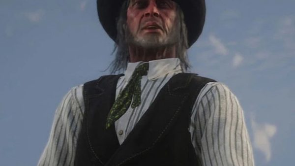
Colm O'Driscoll
Micah affronte les hommes de Colm dès le début : au ranch Adler, à Ewing Basin, où il trouve sur un O'Driscoll mort les plans du train de Cornwall, à Strawberry, où il en tue deux et abat son compagnon de cellule, et à Big Valley, où ils tendent une embuscade à sa diligence. Au chapitre 3, il plaide pourtant pour accepter la trêve proposée par Colm, en demandant si le gang peut se permettre de se battre "on all these fronts" (sur tous ces fronts). Dutch et Micah rentrent indemnes, tandis que les hommes de Colm capturent Arthur.

Andrew Milton
Dans "Just a Social Call", Arthur, Dutch et Micah, cachés sur le quai d'Annesburg, regardent Milton et Ross descendre du yacht de Cornwall. Selon Milton, la Pinkerton a arrêté Micah au retour du gang des Caraïbes, et "he's been a good boy ever since" (depuis, il est bien sage). Milton le révèle à Arthur à Van Horn, en le tenant en joue, quelques instants avant qu'Abigail ne l'abatte. Arthur rapporte la nouvelle à Beaver Hollow.

Edgar Ross
En 1899, Ross travaille pour la Pinkerton aux côtés de Milton ; à Annesburg, Arthur, Dutch et Micah observent les deux agents pendant que Cornwall leur reproche leur manque de résultats. En 1907, désormais à la tête du Bureau of Investigation, Ross découvre avec Archer Fordham le corps de Micah dans sa cachette du mont Hagen. Leur enquête les mène à John, à Beecher's Hope, ce qui prépare les événements de Red Dead Redemption.

Archer Fordham
Fordham apparaît avec Edgar Ross dans le générique de 1907. En juin de cette année-là, les deux agents découvrent le corps de Micah, face contre terre, dans sa cachette du mont Hagen ; Fordham fouille la cabane et hausse les épaules. Ils interrogent ensuite des témoins dans toute la région, notamment au Smithfield's Saloon de Valentine. La séquence s'achève sur les deux hommes observant John Marston au travail dans son ranch de Beecher's Hope.
Cleet
Cleet chevauchait avec Micah bien avant 1899. Micah le fait entrer dans le gang avec Joe au chapitre 6 ; dans "My Last Boy", Arthur se plaint de ces deux recrues auprès de Dutch. Cleet se bat sur le train de la solde, se range avec Micah à Beaver Hollow et le suit dans la poursuite d'Arthur et de John. Il rejoint ensuite la nouvelle bande de Micah. D'après Cleet, il a plus tard empêché Micah de tuer une fillette lors de l'attaque d'une famille, et Micah a voulu le tuer pour cela. En 1907, John, Sadie et Charles le capturent à Strawberry ; sur la potence, il livre le mont Hagen, puis meurt, pendu par John ou abattu par Sadie.
Joe
Joe, autre ancien complice de Micah, entre dans le gang avec Cleet au chapitre 6. Dans "Our Best Selves", il repart chercher John avec Dutch, Micah et Javier, et le groupe revient sans lui. Joe se range avec Micah à Beaver Hollow, prend part à la poursuite d'Arthur et de John, puis suit Micah dans sa propre bande. En 1907, il barre la route de John avec deux autres hommes au mont Hagen, et John les abat tous les trois. Dans Red Dead Online, où on le croise avant les événements de l'histoire, Joe demande au joueur s'il connaît Micah.

Catherine Braithwaite
Dans "Advertising, The New American Art", Dutch et Micah exposent à Arthur leur plan : monter les Braithwaite et les Gray les uns contre les autres pour mettre la main sur leur argent. Quand les Braithwaite enlèvent Jack, le gang prend d'assaut Braithwaite Manor dans "Blood Feuds, Ancient and Modern", tandis que Micah et Kieran restent garder le camp. Catherine meurt dans le manoir en flammes.

Tavish Gray
Quand les Gray découvrent que le gang travaille pour les deux familles, ils lui proposent une mission de protection à Rhodes. Sean, Bill et Micah acceptent, et Arthur les rejoint. C'est un piège : Sean est tué d'emblée, le shérif Leigh Gray prend Bill en otage, et Micah et Arthur abattent les hommes du shérif tandis qu'Arthur tue Leigh Gray devant son bureau. Tavish lui-même n'est pas présent.
Eagle Flies
Dans "My Last Boy", Eagle Flies arrive à Beaver Hollow avec des guerriers pour combattre l'armée aux Heartland Oil Fields. Arthur accepte de l'aider, puis Charles, puis Dutch et la majeure partie du gang, à l'exception de Micah, Cleet et Joe, qui restent au camp. Micah ne participe donc pas au combat des champs pétrolifères, où Dutch abandonne Arthur. Eagle Flies y est touché et succombe à ses blessures.

Leviticus Cornwall
Après l'attaque de "Old Friends", Micah trouve sur un O'Driscoll mort les plans d'un train, qui s'avère être celui de Cornwall et que le gang attaque ensuite. Dans "Just a Social Call", il attend à Annesburg le yacht de Cornwall avec Arthur et Dutch ; pendant que ceux-ci affrontent Cornwall, Micah se lance aux trousses de son secrétaire, Janson, et l'assomme. Les papiers qu'il emporte révèlent que la compagnie de Cornwall transporte de la dynamite pour l'armée ; Micah envoie ensuite Arthur et Bill la voler dans "The Delights of Van Horn".
Hercule Fontaine
À Guarma, Hercule mène les rebelles qui libèrent Micah et les autres naufragés des soldats de Fussar. Après la bataille de Cinco Torres, Micah signale que Fussar a installé des batteries sur les plages pour les empêcher de partir. Dans "Paradise Mercifully Departed", Hercule, Dutch, Micah et Arthur détruisent ces batteries, Micah posant la dynamite, puis attaquent Aguasdulces, ce qui libère le capitaine du navire et permet au gang de rentrer.
Amos Bell
Amos est le frère de Micah. Il vit en Californie avec sa femme et ses filles, et somme Micah, dans une lettre, de rester loin de sa famille (voir la biographie). Au coin du feu, Micah traite son frère d'imbécile et de lâche, méprise sa femme et se moque de lui parce qu'il vit au bord de la mer, choix imposé selon lui par son épouse.
Micah Bell II
Le père de Micah, Micah Bell Jr., était un hors-la-loi, comme son propre père avant lui. Une coupure de presse de 1877 désigne le père et le fils comme suspects d'un double meurtre dans l'Ohio (voir la biographie). Au coin du feu, Micah raconte que son père a été recherché pour meurtre dans cinq comtés, qu'il ne supportait pas les imbéciles et qu'il a failli tuer Amos.
Norman
Norman est un ancien complice de Micah, rencontré lors d'un braquage de banque raté dans le Sud, qui vit à Strawberry avec sa femme, Maddy. Quand Micah est jeté en prison après une bagarre en ville, Norman s'empare de ses revolvers. Dans "Blessed are the Meek?", à peine évadé, Micah se rend chez Norman, l'abat sur le perron, puis tue Maddy à l'intérieur et récupère ses armes. Il expliquera ensuite à Dutch qu'il s'agissait d'une vieille histoire et qu'il s'était laissé emporter.
Compétences, armes et chevaux
Combat
Micah se bat un revolver dans chaque main. Selon le récit du gang, il a gagné sa place en sauvant la vie de Dutch lors d'une fusillade à Crenshaw Hills. Dans "Blessed are the Meek?", Arthur et lui abattent la plupart des hommes de loi de Strawberry, shérif Hanley compris. Dans "A Short Walk in a Pretty Town", ils nettoient Rhodes des hommes des Gray et libèrent Bill. Il prépare et mène des attaques de diligence : l'une à Big Valley avec Arthur, l'autre à Bayou Nwa avec Arthur et Bill, arrêtée à la dynamite. À Guarma, il pose les charges sur les batteries côtières de Fussar. Au mont Hagen, il tient John en échec. Dans la dernière partie de "American Venom", il est le seul personnage de la série Red Dead sur qui le ralenti du Dead Eye reste sans effet. Celui-ci fonctionne de nouveau une fois que le tir de Dutch l'a blessé, et un seul marquage suffit alors à John pour l'achever.
Armes
Ses armes sont deux Double-Action Revolvers personnalisés, carcasse en acier bruni et crosse rouge et noire ornée d'une tête de mort ; le canon porte la gravure "Vengeance is hereby mine" (la vengeance m'appartient). En jeu, le revolver de Micah frappe aussi fort qu'un Cattleman Revolver et se montre un peu plus précis que le modèle de base. Il ne peut pas être personnalisé, et l'inventaire du joueur n'en accepte qu'un. Micah porte aussi un couteau de chasse à sa ceinture.
À Strawberry, Arthur lui remet un Cattleman Revolver pour l'évasion, mais Micah retourne chercher ses revolvers et tue pour cela son ancien complice Norman et sa femme Maddy ; il confie ensuite à Arthur qu'il ne tient pas à grand-chose autant qu'à ces armes. Il est le seul naufragé à garder les siennes à Guarma, et on le voit souvent les nettoyer au camp. Les armes longues sont rares entre ses mains : il tire avec une Carbine Repeater sur le wagon dans "Who the Hell is Leviticus Cornwall?" et en tient une quand il monte la garde à Guarma. Dans "An American Pastoral Scene", il tend à Arthur une Lancaster Repeater, "more your style" (plus ton genre). Après "American Venom", John peut récupérer l'un des deux revolvers sur son corps.
Chevaux
Son cheval en 1899 est Baylock, un Missouri Fox Trotter à robe noire, en tête blanche et aux yeux bleus. Micah le monte depuis le blizzard de Colter, où il guide Dutch et Arthur jusqu'au ranch Adler, pendant la fuite de Strawberry, au terme de laquelle Baylock se cabre sur un coup de tonnerre sans que Micah s'en émeuve, et lors de ses attaques de diligence. Baylock n'est pas monté à Guarma, mais on le retrouve au camp ensuite. Quand Arthur porte du foin, Micah peut lui demander de penser à Baylock. Dans "Red Dead Redemption", Micah fuit le raid des Pinkerton sur Beaver Hollow sur le dos de Baylock, que l'on ne revoit plus.
Si Baylock meurt, Micah réagit avec stupeur et colère. Après l'attaque de diligence du Bayou Nwa, on peut tuer le cheval sans faire échouer la mission : Arthur perd de l'honneur, et Micah rentre au camp à pied, invulnérable à tout sauf à un piétinement. Dans la version bêta, Baylock avait la même robe que le Dark Horse de Red Dead Redemption ; la version finale lui donne des yeux bleus et une liste asymétrique.
Missions
Le Red Dead Wiki recense 24 missions principales de Red Dead Redemption 2 où apparaît Micah, ainsi que deux activités avec des compagnons. L'édition française en compte 22 : elle ajoute "The Battle of Shady Belle" et "Dear Uncle Tacitus", que les pages de ces missions ne rattachent pas à Micah, et omet quatre missions où les pages anglaises le font intervenir. Le tableau suit la liste anglaise, dans l'ordre du récit. Micah n'est jamais jouable. Il confie lui-même cinq de ces missions, de "Blessed are the Meek?" au chapitre 2 à "The Delights of Van Horn" au chapitre 6, et il est la dernière cible du jeu dans "American Venom".
| Mission | Chapitre | Rôle de Micah |
|---|---|---|
| Outlaws from the West | 1. Colter | Parti en éclaireur, il retrouve Dutch et Arthur dans la neige et les conduit à Adler Ranch. Il repère un cadavre dans un chariot ; c'est le gang qui ouvre le feu, Arthur ou Micah abattant l'un des O'Driscoll. Il découvre ensuite Sadie Adler dans la cave et se moque d'elle ; la maison prend feu pendant l'altercation. |
| Old Friends | 1. Colter | Se dispute avec Bill dans la cabane des hommes jusqu'à l'arrivée de Dutch, puis participe à l'attaque du camp O'Driscoll, où il trouve les plans du train que la bande comptait dévaliser. |
| Who the Hell is Leviticus Cornwall? | 1. Colter | Participe à l'attaque du train de Cornwall. Il tire sur le wagon avec une Carbine Repeater, puis fouille le fourgon avec Arthur et Lenny à la recherche des obligations. |
| Eastward Bound | 1. Colter | Envoyé en avant des chariots avec Lenny pour surveiller la route pendant le départ vers Horseshoe Overlook. |
| Blessed are the Meek? | 2. Horseshoe Overlook | Donneur de mission. Emprisonné à Strawberry, il est libéré par Arthur, abat son compagnon de cellule O'Driscoll, tue Norman et sa femme Maddy pour récupérer ses revolvers, puis s'enfuit avec Arthur après une bataille contre les hommes de loi de la ville. |
| An American Pastoral Scene | 2. Horseshoe Overlook | Donneur de mission. Attaque avec Arthur une diligence bancaire en route pour Strawberry, la conduit et repousse les O'Driscoll au bord de la Dakota River avant de partager le butin. |
| Advertising, The New American Art | 3. Clemens Point | Expose avec Dutch le plan consistant à profiter de la querelle entre les Gray et les Braithwaite. |
| Blessed are the Peacemakers | 3. Clemens Point | Donneur de mission. Pousse Dutch à accepter la rencontre proposée par Colm O'Driscoll, contre l'avis de Hosea, et s'y rend avec lui pendant qu'Arthur les couvre depuis une crête. |
| A Short Walk in a Pretty Town | 3. Clemens Point | Se rend à Rhodes avec Arthur, Bill et Sean pour un prétendu contrat avec les Gray. Après l'embuscade où Sean est tué, Arthur et lui nettoient la rue et affrontent le shérif Gray pour libérer Bill. |
| Blood Feuds, Ancient and Modern | 3. Clemens Point | Reste avec Kieran pour garder Clemens Point pendant que les autres attaquent Braithwaite Manor pour récupérer Jack. |
| Banking, The Old American Art | 4. Saint-Denis | Participe au braquage de la banque de Saint-Denis en costume blanc et gilet rouge, s'enfuit par les toits et embarque pour les Caraïbes avec Dutch, Arthur, Bill et Javier. |
| Lost and Not Quite Found | 5. Guarma | Fait partie des hommes qui gagnent un canot quand l'Antenor sombre dans la tempête, alors qu'Arthur reste bloqué sur le pont. |
| Welcome to the New World | 5. Guarma | Échoué sur Guarma avec Dutch, Bill et Javier ; capturé avec eux par la milice de Levi Simon, puis libéré grâce à Hercule Fontaine. |
| Hell Hath No Fury | 5. Guarma | Défend le fort de Cinco Torres, garde le canon sur le toit avec Bill, puis part retrouver le capitaine du navire. |
| Paradise Mercifully Departed | 5. Guarma | Détruit les batteries côtières avec Arthur, Dutch et Hercule, puis quitte Guarma avec les autres. |
| Fleeting Joy | 6. Beaver Hollow | Arrive à Lakay avec Javier juste avant Dutch. À la fin de l'assaut des Pinkerton, il achève un agent blessé au couteau. |
| That's Murfree Country | 6. Beaver Hollow | Présent au nouveau camp de Beaver Hollow ; il ne prend pas part à l'action de la mission. |
| Visiting Hours | 6. Beaver Hollow | Présent au camp quand Arthur ramène John de Sisika. Dutch convoque ensuite Arthur à Annesburg, où Micah et lui l'attendent. |
| Just a Social Call | 6. Beaver Hollow | Donneur de mission. Empoigne Arthur à son arrivée en lui demandant s'il a été suivi ; Dutch explique à Arthur que Micah croit à la présence d'une taupe. Micah suit ensuite le secrétaire de Cornwall, Janson, l'assomme et lui vole les papiers sur le transport de dynamite pour l'armée. |
| The Delights of Van Horn | 6. Beaver Hollow | Donneur de mission. Envoie Arthur et Bill voler la dynamite pendant qu'il s'occupe de "planifier", se moque de la maladie d'Arthur, puis charge John d'apporter la dynamite au pont Bacchus et demande à Arthur de l'aider. |
| My Last Boy | 6. Beaver Hollow | Ordonne à Arthur de respecter Dutch, puis reste au camp avec Cleet et Joe pendant que le gang part avec les Wapiti. |
| Our Best Selves | 6. Beaver Hollow | Participe à l'attaque du train de la paie de l'armée qu'il a préparée. Quand John tombe du train, il repart avec Dutch, Javier et Joe, puis annonce à Arthur que John n'a pas survécu. |
| Red Dead Redemption | 6. Beaver Hollow | Dissuade Dutch d'aller sauver Abigail. Démasqué par Arthur comme informateur des Pinkerton, il abat Susan Grimshaw, s'enfuit avec Dutch et affronte Arthur dans la scène finale du chapitre. |
| American Venom | Épilogue, partie 2 | Chef de sa propre bande au mont Hagen. Il échange des tirs avec John, se fait tenir en joue par Sadie, la prend en otage quand Dutch apparaît, puis est abattu par Dutch et achevé par John. |
| Five Finger Fillet (companion activity) | 3. Clemens Point | L'un des deux membres du gang, avec Javier, que l'on peut défier au Five Finger Fillet au chapitre 3. |
| Coach Robbery (Micah Bell) (companion activity) | 4. Saint-Denis | Donneur de mission. Place de la dynamite sur la route, dans le Bayou Nwa, pour arrêter une diligence bancaire de la Boles Overland, avec Arthur et Bill. Le butin s'élève à 305 dollars, dont 55 pour le joueur. |
Personnages notables tués par Micah
Le Red Dead Wiki distingue les meurtres de l'histoire, qui ont toujours lieu, de ceux qui dépendent de la façon de jouer une mission ou de la fin choisie. Le tableau reprend tous les noms des deux listes, ainsi que deux meurtres montrés dans les pages de missions : son compagnon de cellule O'Driscoll à Strawberry et un Pinkerton blessé à Lakay. Les ennemis anonymes tués lors des fusillades (hommes de loi, O'Driscoll, Pinkerton, soldats de Guarma) ne figurent pas ici.
| Nom | Mission | Circonstances |
|---|---|---|
| Compagnon de cellule O'Driscoll | Blessed are the Meek? | Histoire. Arrêté avec Micah après la bagarre de Strawberry. Dès qu'Arthur tend un revolver à Micah, celui-ci lui tire une balle dans la tête. |
| Norman | Blessed are the Meek? | Histoire. Un ancien complice qui avait gardé les revolvers de Micah après son arrestation ; les deux hommes avaient participé à un braquage de banque raté dans le Sud. Micah lui tire dans le ventre quand il ouvre sa porte et le laisse sur le perron. |
| Maddy | Blessed are the Meek? | Histoire. L'épouse de Norman. Micah l'abat à l'intérieur de la maison avant de reprendre ses armes. On ne la voit jamais en jeu normal. |
| Le shérif Hanley | Blessed are the Meek? | Selon le joueur. Le shérif de Strawberry, qui avait condamné Micah à la pendaison. Il meurt dans la fusillade de l'évasion, tué par Arthur ou par Micah. |
| Jock Gray et Archibald MacGregor | A Short Walk in a Pretty Town | Selon le joueur. Un membre de la famille Gray et un adjoint, aux côtés du shérif Gray devant son bureau. Si Arthur n'abat que le shérif, Micah tue les hommes qui l'entourent, Jock et Archibald compris. |
| Agent Pinkerton blessé | Fleeting Joy | Histoire, visible en arrière-plan. À la fin de l'assaut sur Lakay, Micah tue au couteau un agent blessé. |
| Cain | Entre les chapitres 5 et 6 | Non montré. Le chien de Jack disparaît lors du départ pour Beaver Hollow. Quand Jack le cherche, Micah lui répond que le chien ne reviendra pas. Le wiki classe ce meurtre comme "fortement suggéré" ; le jeu ne montre jamais ce qui s'est passé. |
| Susan Grimshaw | Red Dead Redemption | Histoire. Elle se range du côté d'Arthur et John et braque un fusil sur Micah. Quand Javier annonce l'arrivée des Pinkerton, elle détourne les yeux et Micah l'abat. |
| Arthur Morgan | Red Dead Redemption | Selon le joueur, en honneur bas uniquement. Si Arthur aide John à fuir, Micah lui tire une balle dans le front après le départ de Dutch. S'il retourne chercher l'argent, Micah le poignarde dans le dos. En honneur élevé, Micah s'en va et Arthur meurt de sa maladie et de ses blessures. |
Plusieurs meurtres sont attribués à Micah sans être montrés. Une coupure de journal de 1877 le désigne, avec son père, comme suspect du meurtre du couple Briggs, dans l'Ohio (voir la biographie). Au chapitre 2, Susan envoie Micah et Lenny en reconnaissance depuis Horseshoe Overlook. Dans "A Quiet Time", Lenny rentre seul : Micah a été arrêté à Strawberry après une bagarre d'ivrognes au cours de laquelle il a tué deux hommes, très probablement des O'Driscoll selon le Red Dead Wiki. En 1907, l'article "Micah Bell Killed" lui attribue deux douzaines de meurtres. Le récit de Cleet sur l'attaque d'une famille figure dans sa notice, parmi les relations.
Citations
Les répliques ci-dessous sont reproduites telles qu'elles sont prononcées dans le jeu, en anglais, avec la mission et la personne à qui elles s'adressent.
Red Dead Redemption 2, chapitres 1 à 3
Huddled around a fire waiting for daddy to put food on the table. I've said it before, we've got too many mouths to feed.
Outlaws from the West (RDR2, chapitre 1), à Arthur, qui lui dit que le reste du gang est au camp minier. Traduction : « Blottis autour d'un feu à attendre que papa remplisse la table. Je l'ai déjà dit, on a trop de bouches à nourrir. »Oh, look what I found in the cellar! Wild thing, ain't ya?!
Outlaws from the West (RDR2, chapitre 1), à Adler Ranch : la première phrase à Dutch et Arthur, qui entrent dans la maison, la seconde à Sadie Adler. Traduction : « Oh, regardez ce que j'ai trouvé dans la cave ! T'es une sauvage, hein ?! »I am not robbing another boat as long as I live...
Who the Hell is Leviticus Cornwall? (RDR2, chapitre 1), à Lenny, qui vient de trouver des papiers sur un bateau commandé en Europe par Cornwall. Traduction : « Plus jamais je ne braque un bateau de ma vie... »Come on, kid. You can buy me a whisky.
Eastward Bound (RDR2, chapitre 1), à Lenny, quand Dutch les envoie en avant des chariots. Traduction : « Allez, gamin. Tu peux me payer un whisky. »Sons of Dutch, makes us brothers...and sometimes brothers make mistakes.
Blessed are the Meek? (RDR2, chapitre 2), à Arthur, qui lui fait des reproches après la fuite de Strawberry. Traduction : « Fils de Dutch, ça fait de nous des frères... et parfois, les frères font des erreurs. »You hit like you dress...all feminine.
Camp de Horseshoe Overlook (RDR2, chapitre 2), à Javier, qui vient de le frapper. Traduction : « Tu cognes comme tu t'habilles... comme une fille. »Oh, I'll wipe that smile off your face one day. Believe me.
Camp de Horseshoe Overlook (RDR2, chapitre 2), à Arthur, qui rit après le coup de poing de Javier. Traduction : « Oh, un jour je te ferai passer l'envie de sourire. Crois-moi. »Well that's because, cowpoke... you are a man of profoundly limited intelligence.
Blessed are the Peacemakers (RDR2, chapitre 3), à Arthur, au camp de Clemens Point, au début de la mission. Traduction : « C'est parce que, cul-terreux... tu es un homme d'une intelligence profondément limitée. »Well of course, it's probably a trap... but what have we got to lose finding out.
Blessed are the Peacemakers (RDR2, chapitre 3), à Hosea et Dutch, à propos de la rencontre proposée par Colm O'Driscoll. Traduction : « Bien sûr, c'est sans doute un piège... mais qu'est-ce qu'on a à perdre à aller voir ? »Here he goes... Doubting Thomas... is there any plan you ain't sour on?
Blessed are the Peacemakers (RDR2, chapitre 3), à Arthur, en route vers la rencontre. Traduction : « Et c'est reparti... saint Thomas... y a-t-il un seul plan qui ne te déplaise pas ? »Sit down, my dearest friend, and show me just what you got.
Five Finger Fillet, activité avec un compagnon (RDR2, chapitre 3), à Arthur. Traduction : « Assieds-toi, mon très cher ami, et montre-moi ce que tu vaux. »
Red Dead Redemption 2, chapitres 4 à 6 et fins
There's a big picture here, Arthur. Trust me.
The Delights of Van Horn (RDR2, chapitre 6), à Arthur, à propos du plan visant à faire sauter le pont Bacchus ; Arthur se souvient de cette phrase lors de sa dernière chevauchée en honneur bas. Traduction : « Il y a un plan d'ensemble, Arthur. Fais-moi confiance. »I wanna live, cowpoke... I still got the choice. Dutch, it's just a girl...
Red Dead Redemption (RDR2, chapitre 6), après l'enlèvement d'Abigail : à Arthur, qui vient de demander s'ils vont laisser le garçon devenir orphelin, puis à Dutch. Traduction : « Je veux vivre, cul-terreux... j'ai encore le choix. Dutch, c'est qu'une fille... »Black Lung, you're back. Hooray.
Red Dead Redemption (RDR2, chapitre 6), à Arthur, à son retour à Beaver Hollow. Traduction : « Crache-poumons, te revoilà. Youpi. »Oh, be quiet, cowpoke. Be quiet. You live in the clouds.
Red Dead Redemption (RDR2, chapitre 6), à Arthur, qui somme le gang de choisir son camp. Traduction : « Oh, tais-toi, cul-terreux. Tais-toi. Tu vis dans les nuages. »I'm a... survivor, Black Lung... a survivor! That's all there is...living and dying.
Red Dead Redemption (RDR2, chapitre 6), à Arthur, pendant leur combat à mains nues (fin où Arthur aide John à fuir). Traduction : « Je suis un... survivant, Crache-poumons... un survivant ! Il n'y a que ça... vivre ou mourir. »Oh, Black Lung... you ain't gonna reach that gun. You ain't. You lost, my sick friend. You lost.
Red Dead Redemption (RDR2, chapitre 6), à Arthur, qui rampe vers son revolver (fin où Arthur aide John à fuir). Traduction : « Oh, Crache-poumons... tu l'atteindras pas, ce flingue. Jamais. T'as perdu, mon ami malade. T'as perdu. »He's sick... he's dying... he's talking crazy.
Red Dead Redemption (RDR2, chapitre 6), à Dutch, après qu'Arthur l'a traité de taupe (fin où Arthur aide John à fuir). Traduction : « Il est malade... il est mourant... il dit n'importe quoi. »You're not better than me, Morgan.
Red Dead Redemption (RDR2, chapitre 6), à Arthur, avant de l'abattre (honneur bas, Arthur aide John à fuir). Traduction : « T'es pas meilleur que moi, Morgan. »Snake? Okay, then you're a vulture. Robbing Dutch after all he's done for you.
Red Dead Redemption (RDR2, chapitre 6), à Arthur, pendant le combat au couteau (fin où Arthur retourne chercher l'argent). Traduction : « Un serpent ? D'accord, alors toi t'es un vautour. Voler Dutch après tout ce qu'il a fait pour toi. »Get greedy did you, Black Lung? I knew you wanted the money as much as any of us...
Red Dead Redemption (RDR2, chapitre 6), à Arthur, qui vient de perdre l'équilibre (honneur bas, retour pour l'argent). Traduction : « Devenu cupide, hein, Crache-poumons ? Je savais que tu voulais l'argent autant que nous tous... »Oh, you got me pretty good, Black Lung.
Red Dead Redemption (RDR2, chapitre 6), à Arthur, qui vient de lui entailler l'œil gauche (honneur élevé, retour pour l'argent). Traduction : « Oh, tu m'as bien eu, Crache-poumons. »I never... DUTCH!
Red Dead Redemption (RDR2, chapitre 6), quand Dutch les abandonne, Arthur et lui (honneur bas, retour pour l'argent). Traduction : « Je n'ai jamais... DUTCH ! »Well... I must say, Arthur... it's been a lotta fun.
Red Dead Redemption (RDR2, chapitre 6), à Arthur, avant de le poignarder dans le dos (honneur bas, retour pour l'argent). Traduction : « Eh bien... je dois dire, Arthur... on s'est bien amusés. »
Red Dead Redemption 2, épilogue (1907)
Hello, Scarface. Did you miss me?
American Venom (RDR2, épilogue), à John, au mont Hagen. Traduction : « Salut, le Balafré. Je t'ai manqué ? »Dutch and I are teaming up once more... we got money... we got dreams... Join us, John, join us...
American Venom (RDR2, épilogue), à John, pendant le face-à-face au mont Hagen. Traduction : « Dutch et moi, on refait équipe... on a de l'argent... on a des rêves... Rejoins-nous, John, rejoins-nous... »Hellfire... it's just like old times.
American Venom (RDR2, épilogue), à Sadie, qui l'a pris à revers, arme au poing. Traduction : « Bon sang... c'est comme au bon vieux temps. »Arthur's been dead a long time... this, is a new century...
American Venom (RDR2, épilogue), à John, qui rappelle qu'Arthur lui a sauvé la vie plus d'une fois. Traduction : « Arthur est mort depuis longtemps... on est dans un nouveau siècle... »You shot me...you shot me pretty good...
American Venom (RDR2, épilogue), à Dutch, qui vient de lui tirer dans la poitrine ; ses derniers mots. Traduction : « Tu m'as tiré dessus... tu m'as bien eu... »
Répliques de camp
How about you and me go and redistribute some property?
Au camp (RDR2), à Arthur. Traduction : « Et si on allait redistribuer un peu de biens, toi et moi ? »I make the money, not wash the clothes.
Au camp (RDR2), quand il se plaint des corvées. Traduction : « Moi, je ramène l'argent, je lave pas le linge. »
Conception et interprétation
Le casting
Micah Bell est interprété par Peter Blomquist, acteur et auteur américain installé à New York. Il lui prête à la fois sa voix et ses mouvements, en capture de performance. Blomquist avait déjà travaillé pour Rockstar Games : il doublait le Dr Harlan Fontaine, psychiatre et principal antagoniste de L.A. Noire (2011). Fontaine porte un costume blanc et un col roulé rouge ; pour le braquage de la banque de Saint-Denis, Micah porte un costume blanc et un gilet rouge. Aucune source ne dit si la ressemblance est voulue. Le guide officiel publié avec le jeu précise que Micah a rejoint le gang environ cinq mois avant le début de l'histoire, après avoir sauvé la vie de Dutch lors d'une transaction qui a mal tourné.
La construction du personnage
Dans un entretien accordé à GameZone et publié le 18 mars 2019, Blomquist décrit Micah comme un opportuniste visqueux, doté d'un talent rare pour mettre les gens en colère. Il explique avoir construit le rôle sans modèle, pratiquement à partir de rien. De grands méchants lui sont parfois venus en tête, précise-t-il, mais il ne s'est inspiré d'aucun d'eux. Pour entrer dans la peau du personnage, il lui suffisait de s'imaginer sortir d'un marécage avant chaque scène. Il ajoute que Rockstar l'a laissé explorer les limites de la personnalité de Micah, et qu'il comptait sur Rod Edge, directeur de la capture de performance, pour le freiner ou au contraire l'encourager à accentuer les travers du personnage.
Blomquist revient sur ce point lors d'une table ronde avec Roger Clark, Rob Wiethoff, Alex McKenna et Benjamin Byron Davis, publiée par Shacknews le 1er février 2019. À la question de savoir si jouer le méchant parmi les méchants a été libérateur, il répond par l'affirmative. Il dit avoir déjà incarné quelques sales types, mais que celui-ci les surpasse tous. Il a pris tant de plaisir au rôle qu'il fallait le freiner assez souvent, car il a tendance à aller trop loin. Il attribue à l'équipe et à la mise en scène la confiance qui lui a permis d'explorer le personnage. Sur le plan physique, le plus dur n'était pas la voix, mais les jambes : les fusillades exigeaient beaucoup de courses et de déplacements accroupis.
Dans le même entretien, Blomquist indique avoir tourné une grande partie de ses scènes avec Roger Clark (Arthur), en qui il pouvait toujours avoir confiance. Il cite les derniers moments de Micah avec Arthur comme particulièrement intenses, et dit avoir été captivé par la manière dont Clark gérait cette intensité. Il précise aussi avoir joué à la plupart des jeux Rockstar, sans pour autant se considérer comme un joueur acharné.
La réaction des joueurs
Shacknews demande à Blomquist s'il s'attendait à l'hostilité que le personnage a suscitée chez les joueurs. Il répond que non. Il savait que Micah était un être humain assez épouvantable, mais pas qu'il recevrait autant de messages sur les réseaux sociaux. Il dit prendre presque tout comme un compliment, signe qu'il a fait son travail. Il en attribue le mérite au reste de la distribution, en citant Clark, Davis et McKenna : un méchant n'existe pas en vase clos. Il conclut qu'il accepte toute cette prétendue haine mêlée d'affection reçue sur les réseaux sociaux, et qu'il la mérite.
Rockstar et l'ordre des missions
Dans un entretien publié par VentureBeat le 5 décembre 2018, le journaliste Dean Takahashi rapporte que le service de presse de Rockstar lui a expliqué pourquoi Arthur part boire un verre avant d'aller tirer Micah de la prison de Strawberry : Arthur n'a jamais vraiment apprécié Micah. Rob Nelson, codirecteur de Rockstar North, confirme que des missions ont été déplacées. La soirée arrosée a été placée à cet endroit pour montrer une facette plus légère d'Arthur, et pour qu'il ne se précipite pas au secours d'un homme qui lui importe peu.
Contenu coupé
Les fichiers du jeu contiennent du matériel inutilisé pour Micah : un cache-œil, un gilet, une chemise, une coiffure, deux franges, deux barbes et une tenue de braquage absents de la version finale. Son cadavre existe en deux versions, avec et sans l'œil gauche ; celle qui a encore l'œil n'est jamais utilisée. Les fichiers mentionnent aussi une demande d'objet inutilisée de Micah, notée "bk". Dans la version bêta, ses revolvers étaient plaqués de fer, avec des barillets en acier bruni et des canons plus longs. Norman, l'ancien complice qu'il tue à Strawberry, s'appelait d'abord Nelson : le fichier de la scène porte le nom "micah_confronts_nelson".
Une mission coupée, nommée "ind2" dans les fichiers, devait envoyer Arthur, Micah, Hosea et Abigail mesurer le temps de réaction des forces de l'ordre à Saint-Denis avant "Banking, The Old American Art" : Arthur pose de la dynamite sous le bâtiment Cornwall Freight and Commodities, et la séquence s'achève sur un saut d'Arthur et de Micah hors d'un train, juste avant qu'il ne s'écrase.
Plusieurs conversations de camp ont aussi été enregistrées sans être utilisées. Dans l'une, Micah demande à Charles s'il a déjà scalpé quelqu'un, et Charles menace de le scalper. Dans une autre, il affirme au révérend Swanson que Dieu est mort. Une troisième montre Trelawny faisant tomber un serpent corail du chapeau de Micah, après que celui-ci l'a traité de mouchard. Dans un échange coupé avec Lenny, Micah l'appelle "boy" puis lui lance une insulte raciste, et Lenny s'en va. À Horseshoe Overlook, une réplique coupée montre Micah inviter Abigail à venir s'asseoir avec un "vrai homme" ; elle répond qu'elle lui en enverra un quand elle en aura trouvé un. Après la sortie, le patch du premier jour modifie la physique de plusieurs vêtements et coiffures de personnages non jouables, dont les cheveux de Micah.
Accueil
Critiques
Plusieurs critiques publiées à la sortie citent Micah. Dans le test de GameSpot du 25 octobre 2018, Kallie Plagge relève qu'Arthur réagit mal aux membres impulsifs et brutaux du gang, et que le pire d'entre eux est Micah, si facile à détester qu'on suit volontiers Arthur sur la voie de l'honneur. Le même jour, Mike Williams, de USgamer, salue une distribution attachante et note que même les personnages qu'il déteste, comme les têtes brûlées Micah Bell et Bill Williamson, finissent par se montrer utiles au gang.
L'écriture du personnage n'a pas fait l'unanimité. Dans un article de Polygon consacré au scénario, publié le 22 novembre 2018, Colin Campbell reproche au jeu plusieurs clichés. Un méchant raciste aux cheveux filasse, au visage allongé et à l'accent traînant, écrit-il, n'a rien de plus original qu'un peuplier ; la seule entorse de Rockstar au cliché est d'avoir donné à Micah un chapeau blanc plutôt que noir. Dans son entretien avec les acteurs du 18 mars 2019, GameZone défend l'avis inverse : Micah est odieux, méprisable et répugnant, mais c'est un grand méchant.
Classements
Micah arrive régulièrement dernier dans les classements du gang publiés par la presse, et figure dans des listes des personnages les plus détestés du jeu vidéo. TheGamer a aussi salué l'acteur. Dans un article du 4 août 2019, Jerrad Wyche compare le travail de Blomquist à celui de Jack Gleeson dans le rôle de Joffrey Baratheon dans Game of Thrones : selon lui, les acteurs qui parviennent à faire détester un personnage écrit pour inspirer le dégoût ne sont pas assez reconnus.
- Game Informer, 27 décembre 2018 : 24e et dernier du classement de tous les membres du gang Van der Linde établi par la rédaction, qui le décrit comme une brute ignoble et sectaire.
- TheGamer, 10 août 2019 : 10e et dernier des dix membres les plus importants du gang, dans un classement de Jerrad Wyche qui le qualifie de "rat" du gang Van der Linde.
- Gamepressure, 19 mars 2021 : retenu par Darius Matusiak parmi les 12 personnages de jeu vidéo les plus détestés, aux côtés de Frank Tenpenny (Grand Theft Auto: San Andreas) et d'Abby Anderson (The Last of Us Part II).
Autres médias et postérité
Promotion
Micah apparaît aux côtés d'Arthur dans la troisième bande-annonce, publiée le 2 mai 2018, et dans la vidéo de gameplay du 9 août 2018. Une illustration officielle le montre avec deux Schofield Revolvers, alors qu'il utilise dans le jeu des Double-Action Revolvers personnalisés. Le 6 septembre 2018, sept semaines avant la sortie, Rockstar publie sur Twitter les portraits des 23 membres du gang, dont celui de Micah. Le message se limite à son nom et à son portrait ; la description qui l'accompagne est celle citée dans la partie Personnalité. The Hollywood Reporter reprend la série le lendemain. Sur le montage collectif, il figure au dernier rang, entre Lenny et Arthur.
Le guide officiel de Piggyback, Red Dead Redemption 2: The Complete Official Guide, paru le 26 octobre 2018, lui consacre une fiche en page 363. C'est de lui que vient le récit de son arrivée dans le gang, repris dans la partie Conception et interprétation.
Réputation
Micah est rapidement devenu l'un des personnages les plus détestés du jeu chez les joueurs. Les réactions de Peter Blomquist, confiées à Shacknews et à GameZone en 2019, sont présentées dans la partie Conception et interprétation. Le 26 février 2021, GTABase publie un article de Joseph Poulos intitulé "Why Micah Bell Is STILL The Most Hated Antagonist Of All Time". Les classements de presse qui le comptent parmi les personnages les plus détestés figurent dans la partie Accueil.
Apparitions
Blomquist participe, notamment avec Roger Clark, Rob Wiethoff, Alex McKenna, Curzon Dobell et Steve J. Palmer, à la table ronde des acteurs de Red Dead Redemption II à la SacAnime de l'été 2019, à Sacramento, le 8 juin 2019. Le 22 janvier 2020, il revient sur le rôle dans l'épisode 19 du podcast ComiCulture. D'après le résumé qu'en donne Wikipédia, il a passé l'audition avec un monologue sans rapport avec l'époque, a attendu quatre ou cinq mois la réponse, et n'a appris que tard dans la production que Micah faisait partie des principaux antagonistes.
Anecdotes
Histoire et personnages
- C'est une idée de Micah qui déclenche l'enchaînement des événements du jeu. Dans "Eastward Bound", Hosea rappelle à Dutch qu'Arthur et lui étaient sur le point de réussir à Blackwater quand Micah l'a emballé avec le coup du ferry. L'échec de ce braquage pousse le gang dans les montagnes au début du chapitre 1.
- Sa mort mène aussi aux événements de Red Dead Redemption. Pendant le générique de fin, Edgar Ross et Archer Fordham découvrent son corps au mont Hagen, interrogent des témoins, puis remontent jusqu'à son meurtrier, John, à Beecher's Hope.
- Après "An American Pastoral Scene", le campement provisoire de Micah à Monto's Rest, près de Strawberry, contient un avis de recherche déchiré promettant 1 000 dollars pour Dutch van der Linde, ainsi que deux coupures de journaux. La première est l'article de 1877 sur le meurtre des Briggs (voir la biographie). La seconde traite du braquage du ferry de Blackwater et précise que les 150 000 dollars volés restent introuvables.
- Lors d'une conversation au camp, Micah raconte à Arthur avoir couché avec Jenny Kirk quand le gang campait près de Blackwater, et lui demande s'il était au courant. Agacé, Arthur lui interdit de le répéter à Lenny.
- Micah porte presque toujours un chapeau blanc, alors qu'Arthur en porte un noir. Le wiki francophone relève le même contraste.
- Une petite allumette est glissée dans le ruban de son chapeau.
- Au camp, il renifle, se racle la gorge et tousse souvent.
- Après avoir récupéré ses revolvers dans "Blessed are the Meek?", il les dégaine en passant les doigts dans les pontets et en les faisant tournoyer, une variante du road agent's spin popularisé par les westerns.
- Il appelle le gang sa famille et Arthur son frère à plusieurs reprises (voir les citations).
- La fin de Micah préfigure celle de Bill Williamson dans Red Dead Redemption : tous deux quittent Dutch, prennent la tête de leur propre bande et finissent traqués par John. Le mobile, lui, change. John poursuit Micah de son propre chef, pour venger Arthur ; il pourchasse Bill parce qu'Edgar Ross et Archer Fordham retiennent sa famille.
- En 1907, Micah est le premier de ses anciens compagnons que l'on voit John traquer et tuer, quatre ans avant Red Dead Redemption (1911). C'est aussi le seul des quatre dont le joueur ne peut pas éviter la mort. Dans Red Dead Redemption, Javier peut être ramené vivant, la mort de Bill peut être laissée à Abraham Reyes, et Dutch se laisse tomber d'une falaise. Dans son journal, après "American Venom", John écrit qu'il voulait aussi tuer Dutch, mais qu'il ne l'a pas fait.
- La planque de Micah au mont Hagen est déjà visible au loin au chapitre 1, quand le gang chevauche vers la voie ferrée dans "Who the Hell is Leviticus Cornwall?". Elle n'apparaît sur la carte qu'après "American Venom".
Jeu
- Pendant l'affrontement final, le joueur peut faire sauter le chapeau de Micah d'un tir.
- Arthur peut provoquer Micah au camp sans rien perdre en honneur. Poussé à bout, Micah finit par le bousculer, une réaction qu'il partage avec Dutch.
- Dès que "Blessed are the Meek?" est disponible, et tant que Micah n'est pas libéré, le joueur ne peut plus se rendre aux hommes de loi ni aux chasseurs de primes quand il est recherché en West Elizabeth. Après "A Quiet Time", son modèle attend dans la cellule, recroquevillé près de la fenêtre, jusqu'à ce que le joueur le libère.
- Dans "Blessed are the Meek?", les barreaux de sa cellule peuvent être arrachés avec le treuil à vapeur, dynamités, ou contournés en tuant les hommes de loi à l'intérieur pour prendre les clés. Avant de récupérer ses armes, il se bat avec deux Cattleman Revolvers, alors qu'Arthur ne lui en a donné qu'un. Une fois à l'abri, il offre à Arthur un second holster, qui permet de manier deux armes à la fois.
- Dans "An American Pastoral Scene", Micah conduit lentement la diligence volée, et il fait sauter lui-même la serrure du coffre, en râlant, si le joueur tarde trop.
- À la fin de "A Short Walk in a Pretty Town", Arthur n'a qu'à abattre le shérif Gray : Micah tue les adjoints avant qu'ils ne puissent tirer.
- Le revolver de Micah (décrit dans la partie Armes) se récupère normalement sur son corps, au mont Hagen, après "American Venom" ; le corps disparaît une fois l'arme ramassée. On peut aussi l'obtenir plus tôt : dans "Old Friends" ou "An American Pastoral Scene", en menant un ennemi désarmé jusqu'à Micah pour qu'il lui fasse lâcher son arme, ou avant "Blessed are the Meek?", en tirant une flèche incendiaire près de son pied, dans la cellule, pour qu'il la laisse tomber.
- Au mont Hagen, le jeu désigne le cadavre de Micah sous le nom de "Stranger". Le corps ne correspond pas à la cinématique : Micah tombe face contre terre, mais le cadavre repose sur le dos, avec des cheveux châtain clair au lieu de gris. Balles et coups restent sans effet sur lui ; le feu, non.
- Micah est l'un des deux membres du gang, avec Javier, que l'on peut affronter au Five Finger Fillet au chapitre 3. Avant une partie, il raconte que la dernière fois qu'il y a joué, c'était avec "Skinny", le surnom qu'il donne à Norman, et d'autres hommes à Strawberry.
- Pendant l'attaque de la diligence du Bayou Nwa, Micah explique que la bande idéale, selon lui, compte cinq ou six tireurs solides.
Red Dead Online
- Micah n'apparaît jamais dans Red Dead Online, qui se déroule en 1898. Il y est seulement mentionné : lors de la première rencontre avec Joe, cet inconnu demande au joueur s'il connaît Micah, Cleet ou Samson Finch.
- Le shérif Hanley, qui condamne Micah à la pendaison dans l'histoire, tient le tableau des primes de Strawberry dans Red Dead Online.
Nom et références
- Son nom complet est Micah Bell III. Son père, Micah Bell Jr., et son grand-père, Micah Bell Sr., étaient tous deux des hors-la-loi ; Micah raconte que son père a été recherché pour meurtre dans cinq comtés.
- Micah et son frère Amos portent les noms de deux des douze petits prophètes de la Bible hébraïque. Le livre de Michée contient le verset "chacun a pour ennemis les gens de sa maison" (Michée 7:6, traduction Louis Segond).
- Micah commence à réciter "Blessed are the peacemakers, for they shall be called..." au début de la mission du même nom. C'est l'une des rares missions dont le titre est prononcé par un personnage. Le titre de "Blessed are the Meek?" provient lui aussi des Béatitudes de l'Évangile selon Matthieu.
- Le navire qui emmène Micah et les autres loin de Saint-Denis, l'Antenor, porte le nom d'un ancien de Troie qui, dans plusieurs versions du mythe, livre la ville aux Grecs. Dans l'Enfer de Dante, la zone réservée aux traîtres à leur patrie s'appelle l'Antenora, d'après lui.
Galerie
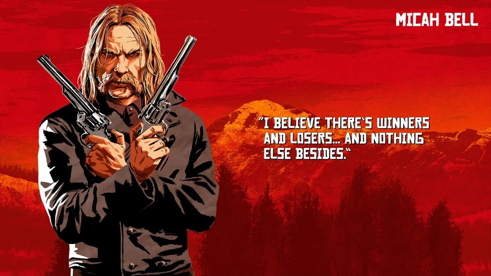
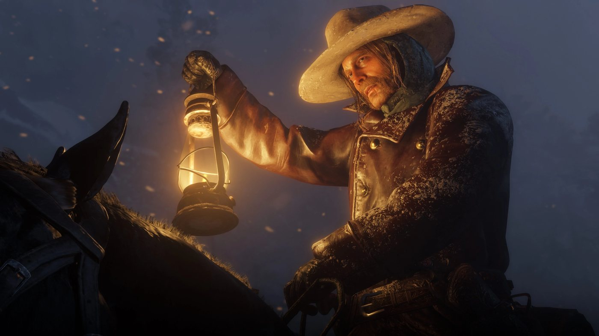
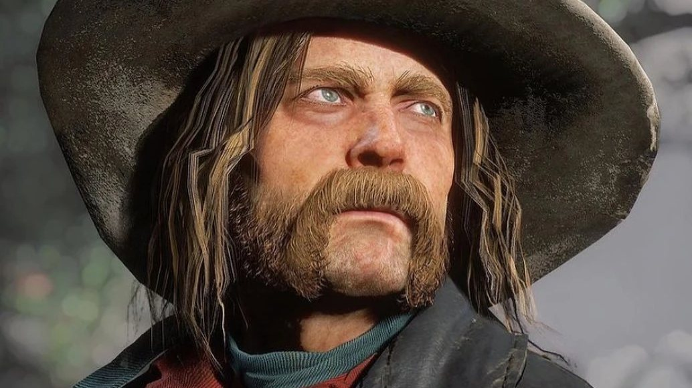
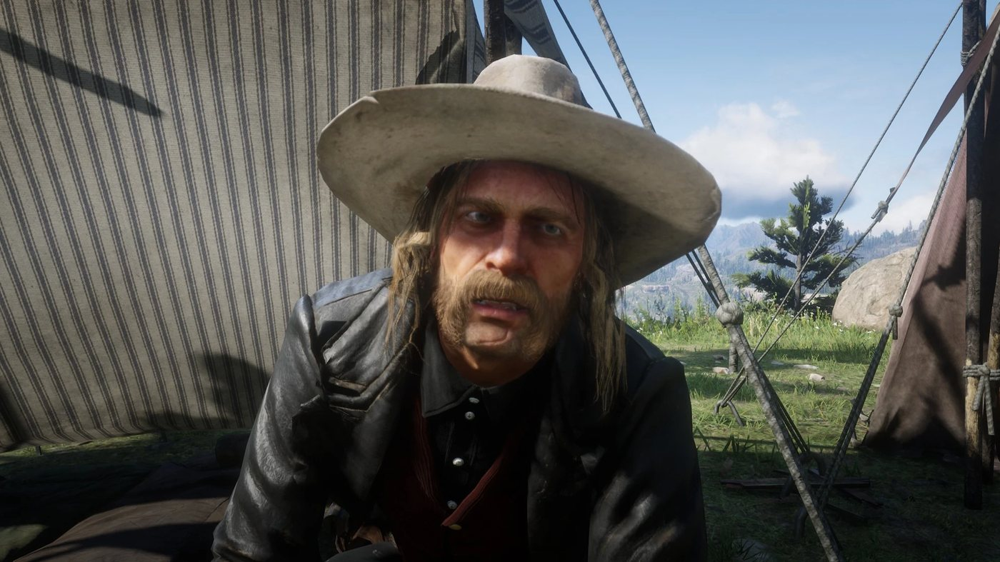
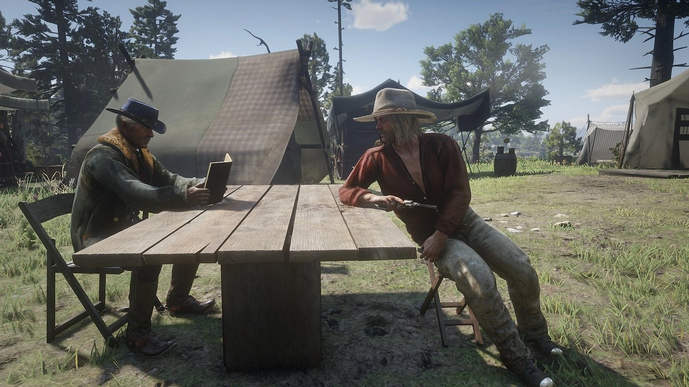
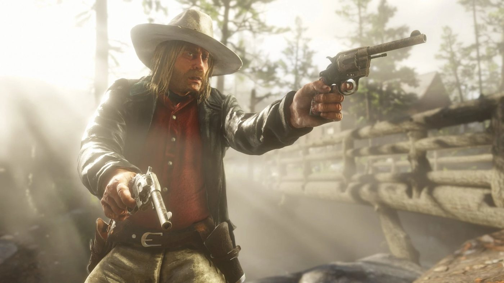
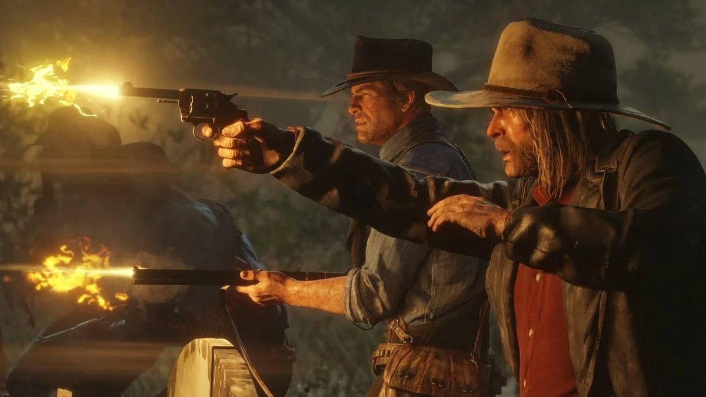
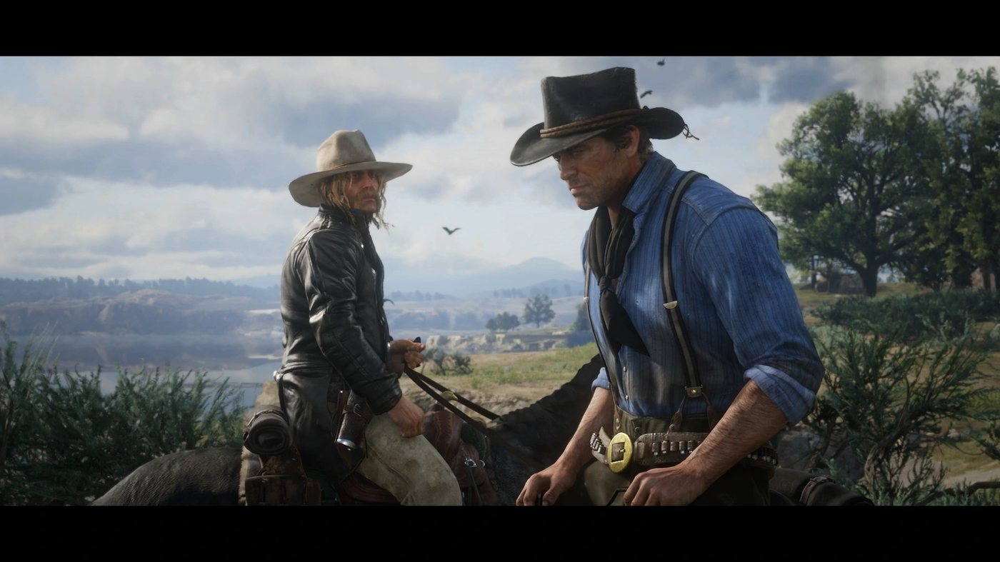
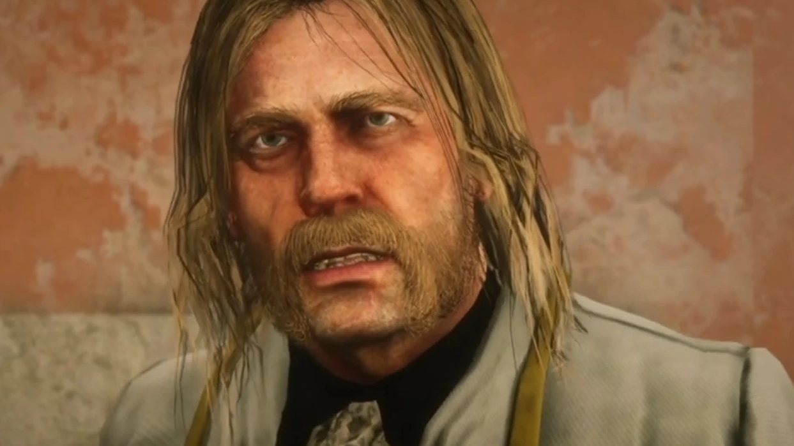
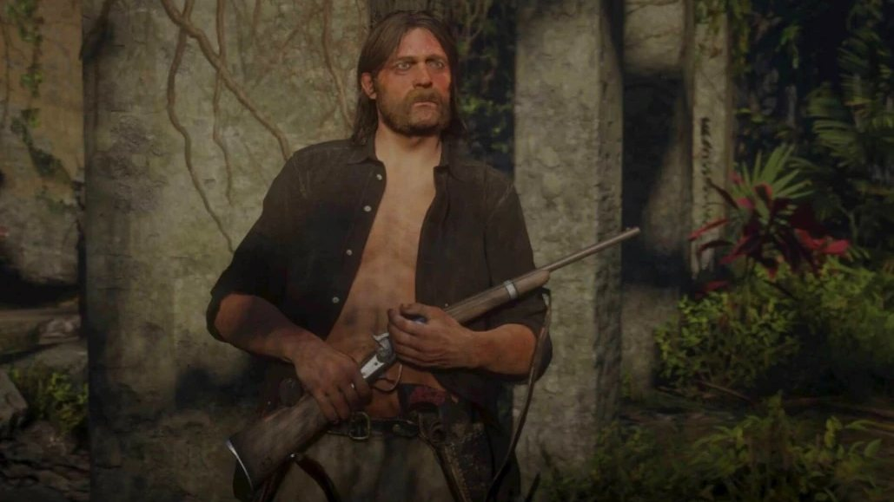
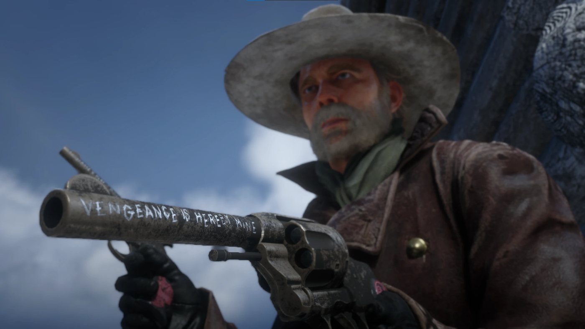
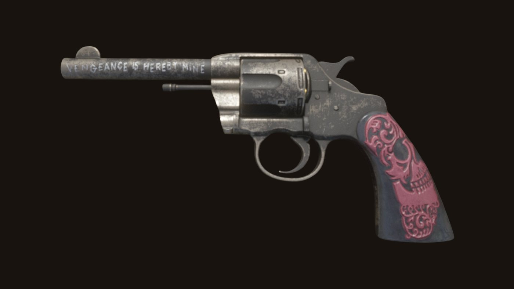
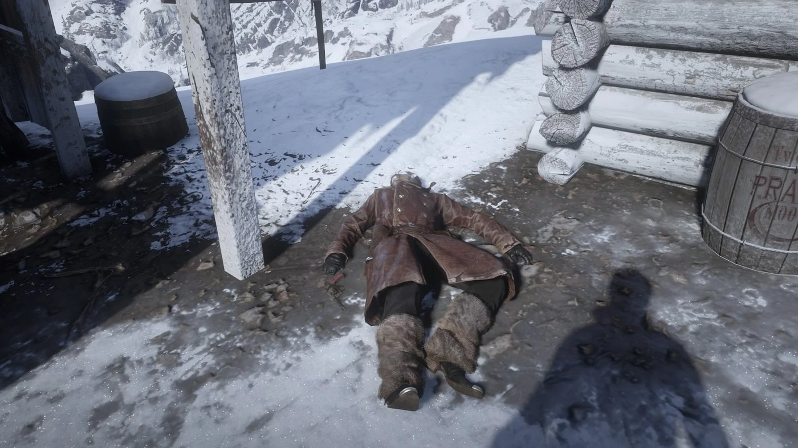